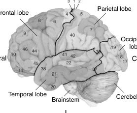
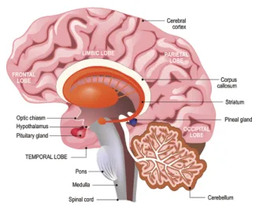
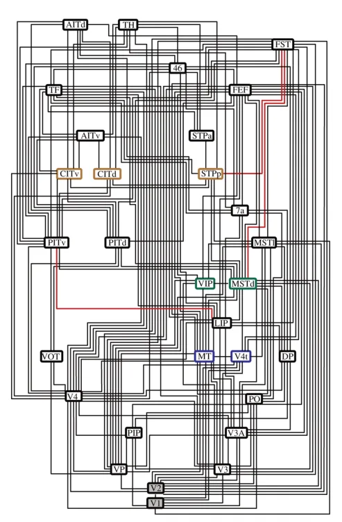
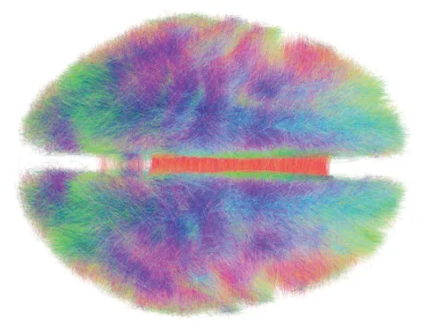
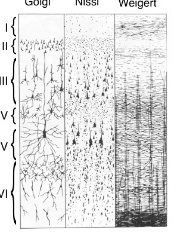
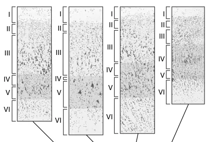
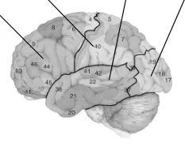
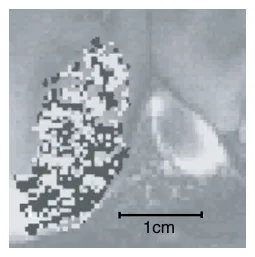
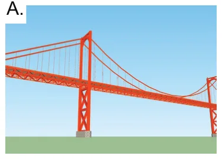
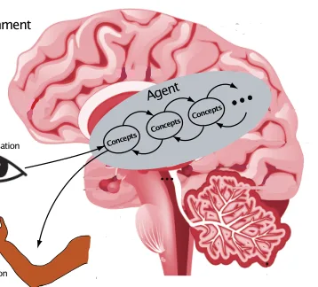

Phần I · Chương 1 — Giới thiệu và triển vọng
I
Cơ sở nền tảng
1 Giới thiệu và triển vọng
Chương mở đầu này phác thảo bức tranh toàn cảnh. Chúng tôi xác định phạm vi của khoa học thần kinh tính toán được thảo luận trong cuốn sách này và trình bày sơ lược một số sự kiện cơ bản về tổ chức của não bộ cũng như các nguyên lý mà chúng ta sẽ bắt gặp trong các chương sau. Chương này bao gồm phần thảo luận về vai trò của mô hình hóa khoa học nói chung và trong khoa học thần kinh nói riêng. Ngoài ra, chúng tôi phác thảo một lý thuyết cấp cao coi não bộ như một mô hình dự đoán thế giới, đồng thời nêu ra một số nguyên lý sẽ định hướng phần lớn các cuộc thảo luận trong cuốn sách này.
1.1 Khoa học thần kinh tính toán là gì?
Khoa học thần kinh tính toán hay khoa học thần kinh lý thuyết sử dụng các kỹ thuật riêng biệt và đặt ra những câu hỏi cụ thể nhằm thúc đẩy sự hiểu biết của chúng ta về hệ thần kinh. Một định nghĩa ngắn gọn có thể là:
Khoa học thần kinh tính toán là ngành nghiên cứu lý thuyết về não bộ nhằm khám phá các nguyên lý và cơ chế chi phối sự phát triển, tổ chức, xử lý thông tin và các năng lực tâm trí của hệ thần kinh. Hầu hết các bài báo trên các tạp chí khoa học thần kinh tính toán đi theo một trong hai hướng chính khá khác nhau. Một hướng là sử dụng các phương pháp tính toán để phân tích dữ liệu, chẳng hạn như phân loại xung thần kinh (sorting spikes) hoặc kiểm định định lượng các giả thuyết. Trong bối cảnh này, các phương pháp từ AI (Trí tuệ nhân tạo) như kỹ thuật học máy ngày nay thường được đưa vào làm công cụ phân tích dữ liệu. Chúng ta sẽ bắt gặp những kỹ thuật như vậy, cụ thể là mạng nơ-ron và học sâu. Tuy nhiên, trọng tâm của chúng tôi ở đây ít đặt vào việc mô tả các phương pháp phân tích dữ liệu mà hướng nhiều hơn tới việc xây dựng các mô hình về chức năng của não bộ để hiểu năng lực xử lý của nó. Do đó, loại hình khoa học thần kinh tính toán được mô tả trong cuốn sách này phần lớn đồng nghĩa với khoa học thần kinh lý thuyết ở chỗ chúng ta phát triển và kiểm định các giả thuyết về cơ chế chức năng của não bộ.
Chúng ta thường sử dụng mô phỏng máy tính trong các nghiên cứu của mình, mặc dù thuật ngữ "tính toán" (computational) nhấn mạnh rộng hơn mối quan tâm của chúng ta đối với các khía cạnh tính toán và xử lý thông tin của các chức năng não bộ. Do đó, một trọng tâm chính trong cuốn sách này là phát triển và đánh giá các mô hình não bộ, hoặc mô hình của các chức năng não bộ cụ thể. Những mô hình này rất quan trọng để tổng hợp tri thức, định lượng các lý thuyết và kiểm định các giả thuyết tính toán. Qua đó, chúng tôi tập trung vào các cơ chế nền tảng và cơ sở cơ chế dường như nằm bên dưới các quá trình của não bộ. Chúng tôi cũng cố gắng làm nổi bật một số nguyên lý mới nổi về xử lý thông tin theo kiểu não bộ. Cuốn sách này không tuyên bố đưa ra một lý thuyết toàn diện về tâm trí. Tuy nhiên, chúng tôi hy vọng rằng việc nắm vững những kiến thức nền tảng này sẽ là một phần quan trọng cho những bước phát triển tiếp theo.
Fundamentals of Computational Neuroscience. Ấn bản lần thứ ba. Thomas P. Trappenberg, Oxford University Press. © Oxford University Press 2023. DOI:10.1093/oso/9780192869364.003.0001
1.1.1 Vị trí trong khoa học thần kinh
Khoa học thần kinh tính toán là một chuyên ngành nằm trong khoa học thần kinh. Bản thân khoa học thần kinh là một lĩnh vực khoa học có nhiều khía cạnh khác nhau. Mục tiêu của nó là tìm hiểu hệ thần kinh, đặc biệt là hệ thần kinh trung ương và tủy sống mà chúng ta gọi chung là não bộ. Não bộ được nghiên cứu trong nhiều ngành khác nhau như sinh lý học, tâm lý học, y học, khoa học máy tính và toán học. Khoa học thần kinh ra đời từ nhận thức rằng các nghiên cứu liên ngành là thiết yếu để thúc đẩy sự hiểu biết của chúng ta về não bộ. Mặc dù đã đạt được những tiến bộ đáng kể trong việc tìm hiểu các chức năng não bộ, vẫn còn nhiều câu hỏi mở mà chúng ta muốn trả lời. Chức năng của não bộ là gì và nó thực hiện nhiệm vụ của mình như thế nào? Các cơ chế sinh học liên quan là gì? Nó được tổ chức như thế nào? Các nguyên lý xử lý thông tin được sử dụng để giải quyết các nhiệm vụ phức tạp như tri giác là gì? Não bộ đã tiến hóa như thế nào? Nó thay đổi ra sao trong suốt cuộc đời của sinh vật? Tác động của tổn thương đối với các vùng cụ thể là gì và khả năng phục hồi ra sao? Nguồn gốc của các bệnh thoái hóa và các phương pháp điều trị khả dĩ là gì? Đây là những câu hỏi được đặt ra bởi các nhà khoa học thần kinh trong nhiều phân ngành khác nhau, sử dụng vô số kỹ thuật nghiên cứu khác nhau.
Nhiều kỹ thuật được áp dụng trong khoa học thần kinh để nghiên cứu não bộ. Những kỹ thuật đó bao gồm thao tác di truyền, ghi hoạt động tế bào ở các tế bào nuôi cấy, lát cắt não, chụp ảnh quang học; chụp ảnh chức năng không xâm lấn, các phép đo tâm vật lý; và mô phỏng tính toán, chỉ kể một vài ví dụ. Mỗi kỹ thuật trong số này đều đủ phức tạp và tốn công sức để đòi hỏi sự chuyên môn hóa của các nhà khoa học thần kinh vào các kỹ thuật cụ thể. Do đó, chúng ta nói đến các nhà sinh lý học thần kinh, nhà khoa học nhận thức và nhà giải phẫu học. Tuy nhiên, điều tối quan trọng đối với bất kỳ nhà khoa học thần kinh nào là phát triển sự hiểu biết cơ bản về tất cả các kỹ thuật chính, để người đó có thể lĩnh hội và vận dụng những đóng góp được thực hiện trong các chuyên ngành này. Khoa học thần kinh tính toán là một lĩnh vực tương đối mới của khoa học thần kinh với tầm quan trọng ngày càng tăng. Nó đóng một vai trò quan trọng trong việc định lượng các lý thuyết dựa trên khối lượng ngày càng lớn các phát hiện thực nghiệm. Việc nắm bắt cơ bản những đóng góp mà khoa học thần kinh tính toán có thể mang lại đang trở nên ngày càng quan trọng đối với mọi nhà khoa học thần kinh.
Trong khoa học thần kinh tính toán, chúng tôi thường sử dụng máy tính, mặc dù các lĩnh vực khác của khoa học thần kinh cũng dùng máy tính. Lý do chính để chúng tôi sử dụng máy tính là vì độ phức tạp của các mô hình trong lĩnh vực này thường vượt quá khả năng giải tích bằng toán học thuần túy. Đối với những mô hình như vậy, chúng tôi phải áp dụng các thí nghiệm số được thiết kế cẩn thận để có thể so sánh mô hình với dữ liệu thực nghiệm. Tuy nhiên, chúng tôi không cần phải giới hạn nghiên cứu của mình vào công cụ này. Một số mô hình có thể giải tích được hoặc có thể được đơn giản hóa một cách có chủ đích để giải tích được. Những mô hình như vậy thường mang lại cái nhìn sâu sắc và có kiểm soát hơn về các đặc điểm của những cơ chế nhất định cũng như nguyên nhân đằng sau các phát hiện số học.
Mặc dù khoa học thần kinh tính toán mang bản chất lý thuyết, điều quan trọng là phải ghi nhớ rằng các mô hình phải được đối chiếu trên dữ liệu thực nghiệm; nếu không, chúng sẽ vô dụng cho việc tìm hiểu não bộ. Chỉ các phép đo thực nghiệm trên não thật mới có thể xác minh não bộ thực sự làm "cái gì". Ngược lại với lĩnh vực thực nghiệm, khoa học thần kinh tính toán cố gắng suy đoán não bộ vận hành "như thế nào". Những suy đoán như vậy được phát triển thành giả thuyết, hiện thực hóa thành mô hình, đánh giá bằng giải tích hoặc bằng số, và kiểm định đối chiếu với dữ liệu thực nghiệm. Ngoài ra, các mô hình thường có thể được sử dụng để đưa ra những dự đoán xa hơn về các hiện tượng nền tảng.
1.2 Tổ chức trong não bộ
Các chức năng tâm trí như tri giác và học các kỹ năng vận động không được thực hiện bởi các nơ-ron đơn lẻ. Những chức năng này là một tính chất nổi trội của các mạng lưới chuyên biệt gồm nhiều nơ-ron tạo nên hệ thần kinh. Số lượng nơ-ron trong hệ thần kinh trung ương ước tính vào khoảng 10^12, và việc khám phá những hệ thống nơ-ron khổng lồ như vậy là một nhiệm vụ đầy thách thức. Do đó, thay vì cố gắng tái tạo não bộ với tất cả mọi chi tiết trên máy tính, chúng ta hướng tới việc hiểu tổ chức chính của não bộ và cách các mạng lưới gồm những phần tử giống nơ-ron có thể hỗ trợ và cho phép thực hiện các quá trình tâm trí cụ thể. Việc tích hợp các nơ-ron thành các mạng lưới với những kiến trúc cụ thể dường như là thiết yếu cho các kỹ năng đó. Chúng ta sẽ khám phá năng lực tính toán của một số kiến trúc chính của mạng nơ-ron trong cuốn sách này.
Kiến thức thấu đáo về giải phẫu của các vùng não mà chúng ta muốn mô hình hóa là điều thiết yếu cho bất kỳ nghiên cứu nào nhằm tìm hiểu các chức năng não bộ. Tuy nhiên, mặc dù các nghiên cứu gần đây đã tiết lộ nhiều sự kiện quan trọng về tổ chức thần kinh, vẫn thường rất khó để xác định tất cả các thành phần của một mô hình chỉ dựa trên dữ liệu giải phẫu và sinh lý học, và phải đưa ra các giả định hợp lý để lấp đầy những khoảng trống tri thức. Ngay cả khi chúng ta có thể dựa vào các chi tiết đã biết, việc đưa ra các giả định đơn giản hóa thường rất hữu ích để cho phép tính toán khả thi hoặc lần theo các tổ chức chính đủ để thực hiện những chức năng nhất định. Việc mô tả toàn bộ chi tiết về tổ chức nơ-ron nằm ngoài phạm vi của cuốn sách này, và cần tham khảo các sách chuyên khảo cũng như bài báo nghiên cứu sâu hơn cho từng vùng não cụ thể. Mục đích của phần sau đây là phác thảo một loạt các sự kiện chủ yếu nhằm nâng cao nhận thức về nhiều yếu tố cấu trúc và tổ chức trong não bộ. Trong khoa học thần kinh tính toán, chúng ta luôn phải vật lộn giữa việc đưa vào càng nhiều chi tiết càng tốt trong khi vẫn giữ cho mô hình đủ đơn giản để làm sáng tỏ các nguyên lý đằng sau chức năng não bộ. Chúng tôi hy vọng phần này sẽ khuyến khích những nghiên cứu cụ thể hơn về giải phẫu não bộ.
1.2.1 Các cấp độ tổ chức trong não bộ
Các mô hình trong khoa học thần kinh tính toán có thể nhắm tới nhiều cấp độ mô tả khác nhau. Bản thân điều này là hệ quả của thực tế rằng hệ thần kinh có nhiều cấp độ tổ chức trên các thang đo không gian trải dài từ cấp độ phân tử vài Angstrom (1 Å = 10^-10 m), cho đến toàn bộ hệ thần kinh ở quy mô trên một mét. Các cơ chế sinh học ở tất cả các cấp độ này đều quan trọng cho hoạt động của não bộ.
Các cấp độ tổ chức khác nhau trong hệ thần kinh được minh họa trong Hình 1.1. Một cấu trúc quan trọng trong hệ thần kinh là nơ-ron, một tế bào chuyên biệt cho việc xử lý tín hiệu. Tùy thuộc vào các điều kiện bên ngoài, nơ-ron có khả năng tạo ra các điện thế dùng để truyền thông tin tới các tế bào khác mà nó kết nối. Các cơ chế ở cấp độ dưới tế bào rất quan trọng đối với khả năng xử lý thông tin như vậy. Nơ-ron sử dụng các chuỗi phản ứng sinh hóa cần được hiểu ở cấp độ phân tử. Chúng bao gồm, ví dụ, quá trình phiên mã thông tin di truyền có ảnh hưởng đến việc xử lý thông tin trong hệ thần kinh. Nhiều cấu trúc bên trong nơ-ron có thể được xác định với các chức năng cụ thể. Chẳng hạn, ti thể là các cấu trúc quan trọng cho việc cung cấp năng lượng trong tế bào, và các khớp thần kinh (xináp) làm trung gian cho việc truyền thông tin giữa các tế bào. Độ phức tạp của một nơ-ron đơn lẻ, và thậm chí cả các cơ chế dưới tế bào cô lập, khiến các nghiên cứu tính toán trở nên thiết yếu cho việc phát triển và xác minh giả thuyết. Ngày nay có thể mô phỏng các nơ-ron được tái tạo hình thái một cách rất chi tiết, và đã có nhiều tiến bộ trong việc hiểu các cơ chế quan trọng ở cấp độ này.
Các cấp độ tổ chức
Thang đo Ví dụ Ví dụ
Con người 10 m
1 m
Hệ thần kinh trung ương (CNS)
Bổ trợ
Vỏ não trước trán (PFC)
trí nhớ
Vỏ não tiền vận động (PMC)
hệ thống
10 cm
Hệ thống
Bản đồ tự tổ chức
Hồi hải mã (HCMP)
1 cm
Bản đồ
1 mm
Mạng lưới
Bộ phát hiện cạnh
Mô hình khoang (Compartmental model)
100 mm
Nơ-ron
Túi xináp và kênh ion
+ +
+ +
1 μm
+ + + +
+ + + +
Khớp thần kinh (Xináp)
+
+
+ + + +
+ + + + + +
+
+
+ + +
+
+ +
+
+
+ +
+
+ +
Axit amin
H O
H N 2 C C OH
1 Å
Phân tử
R
Hình 1.1 Một số cấp độ tổ chức trong hệ thần kinh trung ương ở các thang đo khác nhau [chuyển thể từ Churchland và Sejnowski, The computational brain, MIT Press (1992)].
Tuy nhiên, các nơ-ron đơn lẻ chắc chắn không kể hết toàn bộ câu chuyện. Các nơ-ron tiếp xúc với nhau và qua đó tạo thành các mạng lưới. Một số lượng nhỏ các nơ-ron kết nối với nhau có thể biểu hiện hành vi phức tạp và cho phép các khả năng xử lý thông tin không có ở một nơ-ron đơn lẻ. Hiểu được các mạng lưới nơ-ron tương tác là một lĩnh vực chính trong khoa học thần kinh tính toán. Mạng lưới có những khả năng xử lý thông tin bổ sung vượt ra ngoài khả năng của nơ-ron đơn lẻ, chẳng hạn như biểu diễn thông tin theo cách phân tán. Một ví dụ về mạng lưới cơ bản là bộ phát hiện cạnh được hình thành từ nơ-ron trung tâm-bao quanh (centre-surround) như đề xuất của Hubel và Wiesel. Các cấp độ được minh họa phía trên cấp độ có nhãn "Mạng lưới" trong Hình 1.1 cũng được cấu thành từ các mạng lưới, nhưng với kích thước và độ phức tạp tăng dần. Một ví dụ ở cấp độ được gọi là "Bản đồ" trong Hình 1.1 là bản đồ địa hình tự tổ chức, vốn là một phần của cuộc thảo luận quan trọng trong cuốn sách này.
Sự tổ chức không dừng lại ở cấp độ bản đồ. Các mạng lưới có kiến trúc cụ thể và khả năng xử lý thông tin chuyên biệt được kết hợp thành các cấu trúc lớn hơn có khả năng thực hiện những nhiệm vụ xử lý thông tin thậm chí còn phức tạp hơn. Các mô hình cấp hệ thống rất quan trọng để hiểu các chức năng não bộ bậc cao. Hệ thần kinh trung ương phụ thuộc mạnh mẽ vào sự tương tác động của nhiều hệ thống con chuyên biệt, và sự tương tác của não bộ với môi trường. Thật vậy, sau này chúng ta sẽ thấy rằng các tương tác tích cực với môi trường là thiết yếu cho sự phát triển và chức năng của não bộ.
Mặc dù một nhà nghiên cứu cá nhân thường chuyên sâu vào các cơ chế ở một thang đo nhất định, điều quan trọng đối với tất cả các nhà khoa học thần kinh là phát triển sự hiểu biết cơ bản và trân trọng các chức năng của những thang đo khác nhau trong não bộ. Khoa học thần kinh tính toán có thể hỗ trợ việc điều tra ở mọi cấp độ mô tả, và không có gì ngạc nhiên khi các nhà khoa học thần kinh tính toán nghiên cứu nhiều loại mô hình khác nhau ở các cấp độ mô tả khác nhau. Các phương pháp tính toán từ lâu đã đóng góp cho khoa học thần kinh tế bào, và khoa học thần kinh nhận thức tính toán hiện là một lĩnh vực đang nổi lên nhanh chóng. Những đóng góp của khoa học thần kinh tính toán đặc biệt quan trọng để hiểu các tương tác phi tuyến của các quá trình con. Hơn nữa, điều quan trọng là phải lĩnh hội được sự tương tác giữa các cấp độ mô tả khác nhau, và các phương pháp tính toán đã chứng tỏ rất hữu ích trong việc thu hẹp khoảng cách giữa các phép đo sinh lý học và các tương quan hành vi.
1.2.2 Giải phẫu não bộ quy mô lớn
Hệ thần kinh được phân bố khắp toàn bộ cơ thể. Một phần của hệ thần kinh ngoại biên bao gồm các cơ quan cảm thụ như thụ thể xúc giác hoặc thụ thể tín hiệu thính giác. Một số cơ quan cảm thụ như mắt tự bản thân chúng đã là những hệ thống thần kinh tinh vi cao độ, và thân não đã xử lý các tín hiệu cảm giác để tạo ra các phản ứng nhanh như phản xạ. Tất nhiên, rõ ràng là việc xử lý thông tin phức tạp hơn có thể đạt được nhờ độ phức tạp bổ sung của hệ thần kinh trung ương mà chúng ta thường gọi là não bộ (Hình 1.2). Bản thân não bộ có rất nhiều cấu trúc bên trong, chẳng hạn như các vùng não giữa dưới vỏ bao gồm các cấu trúc mà chúng ta sẽ đề cập như hạch nền hoặc đồi thị. Ngay cả trong vỏ não, chúng ta cũng có thể dễ dàng phân biệt các vùng của vỏ não cổ (paleocortex) và vỏ não nguyên thủy (archicortex), bao gồm các cấu trúc như hạch hạnh nhân, vỏ não khứu giác thứ cấp và cấu trúc hải mã. Những cấu trúc vỏ não này chủ yếu có ba hoặc bốn lớp vỏ não so với sáu lớp của vỏ não mới (neocortex) bao phủ mặt ngoài của não động vật có vú. Như tên gọi đã chỉ ra, vỏ não mới dường như mới hơn về mặt phát sinh chủng loại so với vỏ não nguyên thủy và vỏ não cổ, nghĩa là vỏ não mới phát triển muộn hơn trong quá trình tiến hóa.
Mặc dù vỏ não mới trông đồng nhất hơn, các vùng của vỏ não mới thường được chia thành bốn thùy như minh họa trong Hình 1.2B: thùy chẩm ở phía sau đầu, thùy đỉnh liền kề, thùy trán và các thùy thái dương ở hai bên sườn não. Các phân chia nhỏ hơn có thể được thực hiện dựa trên nhiều tiêu chí khác nhau. Ví dụ, vào đầu thế kỷ XX, nhà giải phẫu học người Đức Korbinian Brodmann đã xác định 52 vùng vỏ não dựa trên kiến trúc tế bào (cytoarchitecture) của chúng — tức sự xuất hiện và sắp xếp đặc trưng của các loại tế bào, có thể được quan sát bằng nhiều kỹ thuật nhuộm khác nhau. Brodmann đánh số các vùng ông tìm thấy, như thể hiện trong Hình 1.2B. Một số phân chia này từ đó đã được tinh chỉnh, và các chữ cái theo sau con số thường được dùng để chỉ định cụ thể hơn một phần nào đó của vùng do Brodmann xác định. Tuy nhiên, bản đồ vỏ não của Brodmann không phải là tài liệu tham khảo duy nhất về các vùng vỏ não được sử dụng trong khoa học thần kinh. Các phân chia và nhãn gọi khác của vùng vỏ não dựa trên, chẳng hạn, các tương quan chức năng của vùng não. Chúng bao gồm các tương quan hành vi của vùng vỏ não được phát hiện qua các tổn thương não hoặc chụp ảnh não chức năng, cũng như các đặc tính đáp ứng của nơ-ron được xác định bằng ghi điện sinh lý.
Mặt lưng (Dorsal)


3 2 1
Thùy trán Thùy đỉnh
Chẩm
thùy
Phía mũi (Rostral) Phía đuôi (Caudal)
Thùy thái dương
Thân não Tiểu não
Mặt bụng (Ventral)
Hình 1.2 Phác họa góc nhìn bên của não người bao gồm vỏ não mới, tiểu não và thân não. Vỏ não mới được chia thành bốn thùy. Các con số tương ứng với phân loại các vùng vỏ não của Brodmann. Các hướng thường được nêu như chỉ dẫn trong 1.2B.
Tất nhiên, việc thiết lập các tương quan chức năng của các vùng vỏ não khác nhau là mối quan tâm lớn, một thách thức thúc đẩy nhiều nghiên cứu sinh lý học. Chúng ta có thể suy đoán rằng sự chuyên biệt hóa chức năng đa dạng trong vỏ não mới được tìm thấy qua các phép đo điện sinh lý sẽ được phản ánh qua những khác biệt cấu trúc lớn giữa các vùng vỏ não khác nhau để hỗ trợ các chức năng tâm trí chuyên biệt. Do đó, thật đáng kinh ngạc khi nhận ra rằng điều này không phải vậy. Thay vào đó, người ta thấy rằng các vùng khác nhau của vỏ não mới có một tổ chức nơ-ron chung giống nhau một cách đáng kinh ngạc. Tất cả các vùng vỏ não mới đều có các lớp phân biệt được về mặt giải phẫu như thảo luận dưới đây. Những khác biệt về kiến trúc tế bào, vốn được Brodmann dùng để lập bản đồ vỏ não, thường chỉ là thứ yếu so với kiến trúc chính bên trong vỏ não mới, và những biến thiên này không thể tự giải thích cho các chức năng khác nhau gắn liền với các vùng vỏ não khác nhau.
Vỏ não mới khác biệt ở khía cạnh này so với các phần cổ hơn của não bộ, chẳng hạn như thân não, nơi các khác biệt về cấu trúc rõ rệt hơn nhiều. Điều này được phản ánh qua một loạt các nhân thần kinh (nuclei) dễ phân biệt hơn. Chúng ta thường có thể gán các chức năng bậc thấp cụ thể cho từng nhân trong thân não. Ngược lại với điều này, dường như vỏ não là một cấu trúc xử lý thông tin có năng lực xử lý phổ quát hơn mà chúng ta suy đoán rằng nó cho phép các năng lực tâm trí linh hoạt hơn. Do đó, việc nghiên cứu năng lực xử lý thông tin của các mạng nơ-ron có kiến trúc vỏ não mới là vô cùng thú vị.
1.2.3 Tổ chức phân cấp của vỏ não
Một đặc điểm chung của vỏ não mới là có các vùng cảm giác sơ cấp nơi các đặc trưng cơ bản của tín hiệu cảm giác được biểu diễn, trong khi các vùng khác dường như hỗ trợ các biểu diễn hoặc nhiệm vụ tâm trí phức tạp hơn. Hãy làm nổi bật quan điểm chung này về vỏ não mới bằng ví dụ về thị giác. Vùng thị giác sơ cấp nhận đầu vào chính từ mắt nằm ở đầu đuôi của thùy chẩm và được gọi là V1. Thông tin sau đó được truyền tới các vùng thị giác khác trong thùy chẩm trước khi tách thành hai luồng xử lý chính: luồng lưng (dorsal stream) đi dọc theo con đường từ đỉnh tới trán, và luồng bụng (ventral stream) đi dọc theo thùy thái dương. Người ta lập luận rằng luồng lưng thích nghi đặc biệt cho việc xử lý không gian, trong khi luồng bụng được trang bị tốt cho việc nhận dạng vật thể. Chúng ta sẽ khảo sát một mô hình về xử lý "cái gì và ở đâu" (what-and-where) như vậy ở phần sau của cuốn sách. Điểm chính ở đây là các nhà khoa học não bộ cố gắng xác định các vùng chức năng cụ thể và các kết nối giữa những vùng này.
Để hiểu cách các vùng não khác nhau phối hợp hoạt động với nhau, điều quan trọng là phải thiết lập chi tiết hơn về kết nối giải phẫu và kết nối chức năng giữa các vùng não. Các kết nối giải phẫu không dễ xác lập vì cực kỳ khó theo dõi đường đi của các sợi trục đã nhuộm xuyên qua não trong các lát cắt não (bao gồm cả các nhánh thường có thể đi theo những con đường khác nhau). Đây là một nhiệm vụ nan giải, mặc dù đã được thực hiện trong một số trường hợp riêng lẻ. Có những phương pháp khác để xác lập các kết nối trong não. Chúng bao gồm việc sử dụng các chất hóa học được nơ-ron vận chuyển tới các vùng đích hoặc từ vùng đích về nơi xuất phát. Các mẫu kết nối chức năng, vốn là điều chúng ta đặc biệt quan tâm khi nghiên cứu cách các vùng não phối hợp với nhau, cũng có thể được xác lập bằng cách kích thích và ghi lại đồng thời ở các vùng não khác nhau. Những thí nghiệm như vậy cho thấy sự tương quan trong các mẫu phát xung của nơ-ron ở các vùng não khác nhau nếu chúng có kết nối chức năng với nhau. Ngoài ra, một số tổ chức não bộ chức năng quy mô lớn có thể được hé lộ bằng các kỹ thuật chụp ảnh não như chụp cộng hưởng từ chức năng (fMRI), giúp làm nổi bật các vùng tham gia vào những nhiệm vụ tâm trí nhất định. Những nghiên cứu như vậy đã xác lập rõ ràng rằng các vùng não khác nhau không hoạt động cô lập. Ngược lại, nhiều vùng não chuyên biệt phải phối hợp với nhau để giải quyết các nhiệm vụ tâm trí phức tạp.
Một số nhà khoa học, như Van Essen và các cộng sự, từ lâu đã cố gắng tổng hợp dữ liệu thực nghiệm thành các bản đồ kết nối tương tự như bản đồ trong Hình 1.3. Ví dụ cụ thể này được thực hiện bởi Claus C. Hilgetag, Mark A. O’Neill và Malcolm P. Young. Các nhà nghiên cứu đã sử dụng cách tiếp cận tin học thần kinh (neuroinformatics). Tin học thần kinh đặc biệt quan tâm đến việc thu thập và biểu diễn dữ liệu thực nghiệm trong các cơ sở dữ liệu lớn để có thể áp dụng các phương pháp khai phá dữ liệu hiện đại. Hilgetag và các cộng sự đã xem xét một thuật toán đánh giá nhiều cấu hình khả dĩ, và họ tìm thấy một tập hợp lớn các mẫu kết nối khả dĩ trong vỏ não thị giác thỏa mãn hầu hết các ràng buộc thực nghiệm. Mỗi ô trong Hình 1.3 biểu diễn một vùng vỏ não được phân biệt với các vùng khác dựa trên những cơ sở khác nhau, thường là về mặt giải phẫu và chức năng. Các đường nét liền giữa các ô này biểu diễn các kết nối giải phẫu hoặc chức năng đã biết. Thứ tự từ dưới lên trên chỉ ra đại khái thứ tự phân cấp mà các vùng não này được tiếp xúc trong luồng xử lý thông tin, từ các vùng thị giác sơ cấp thiết lập một số biểu diễn cơ bản trong não đến các vùng vỏ não cao hơn tham gia vào việc nhận dạng vật thể cũng như lập kế hoạch và thực hiện các hành động vận động. Các tác giả cũng tính đến hai con đường xử lý thị giác cơ bản trong biểu diễn của họ, vẽ các vùng não của luồng lưng ở bên trái và luồng bụng ở bên phải. Lưu ý rằng cũng có những tương tác bên trong các con đường này.
Thú vị thay, hầu hết các nghiệm của bài toán tối ưu hóa số học đều cho thấy một số cấu trúc phân cấp nhất quán. Tất cả các nghiệm tìm được đều vi phạm một số ràng buộc thực nghiệm (đường nét đứt trong Hình 1.3), điều này có thể xuất phát từ sự thiếu chính xác của một số kết quả thực nghiệm. Ngoài ra, các kết nối được chỉ ra không phải là một chiều. Người ta đã xác lập rõ ràng rằng một vùng não gửi sợi trục tới một vùng não khác cũng nhận lại các đường chiếu ngược (back-projections) từ các cấu trúc mà nó gửi tới. Những đường chiếu ngược như vậy thường có cùng bậc độ lớn với các đường chiếu xuôi. Những ví dụ thú vị, không có trong Hình 1.3, là cái gọi là các vòng vỏ não–đồi thị (corticothalamic loops). Cấu trúc dưới vỏ

Hình 1.3 Ví dụ về bản đồ kết nối giữa các vùng vỏ não tham gia xử lý thị giác [in lại với sự cho phép từ C. Hilgetag, M. O’Neill và M. Young, Philosophical Transactions of the Royal Society of London B 355: 71–89 (2000)].
được gọi là đồi thị ban đầu được xem như trạm chuyển tiếp chính mà qua đó thông tin cảm giác chiếu lên vỏ não. Tuy nhiên, ngày càng rõ ràng rằng quan niệm về một trạm chuyển tiếp thuần túy là quá đơn giản vì nhìn chung có nhiều đường chiếu ngược từ vỏ não về đồi thị hơn nhiều so với các đường chiếu xuôi giữa đồi thị và vỏ não. Một số ước tính thậm chí chỉ ra số lượng đường chiếu ngược vượt quá đường chiếu xuôi gấp mười lần. Những hệ quả chức năng cụ thể của các đường chiếu ngược giữa đồi thị và vỏ não cũng như bên trong chính vỏ não vẫn chưa được hiểu rõ. Tuy nhiên, các đặc điểm cấu trúc như vậy nhất quán với những báo cáo về ảnh hưởng của các vùng vỏ não cao hơn lên hoạt động tế bào ở các vùng cảm giác sơ cấp, ví dụ như các hiệu ứng chú ý ở V1.
Trong thập kỷ qua, đã có những nỗ lực ngày càng công phu nhằm tạo ra một sơ đồ đấu dây chi tiết hơn của não bộ, được gọi là hệ kết nối (connectome). Một trong những bản đồ đầy đủ đầu tiên về tất cả các nơ-ron và kết nối đã được thực hiện cho một loài giun tròn có tên Caenorhabditis elegans. Do đó, loài vật này đã trở thành một trong những hệ thống mô hình được nghiên cứu kỹ lưỡng nhất trong khoa học thần kinh. Dự án Não Xanh Châu Âu (European Blue Brain Project) nỗ lực lập bản đồ não chuột, và cũng có những nỗ lực lập bản đồ não người. Một hình ảnh trực quan về các kết nối chất trắng từ 20 đối tượng được trình bày trong Hình 1.4

Hình 1.4 Ví dụ về hệ kết nối (connectome) cấp nhóm của chất trắng ở người. [A. Horn, D. Ostwald, M. Reisert, F. Blankenburg (Tháng 11 năm 2014). ‘The structural-functional connectome and the default mode network of the human brain’. NeuroImage 102(1): 142–51].
1.2.4 Truyền tải dữ liệu nhanh chóng trong não bộ
Từ góc nhìn cấp hệ thống của não bộ, có vẻ như có rất nhiều giai đoạn xử lý trong não khiến việc hoàn thành ngay cả những nhiệm vụ cơ bản như nhận dạng vật thể cũng có thể mất một khoảng thời gian đáng kể. Một minh họa hay về tốc độ thông tin có thể được truyền qua não bộ được cung cấp bởi nghiên cứu của Simon Thorpe và các cộng sự. Họ đã chứng minh rằng các đối tượng người có khả năng phân biệt sự có mặt hay vắng mặt của các nhóm vật thể cụ thể, chẳng hạn như động vật hoặc ô tô, trong các cảnh thị giác được trình chiếu trong thời gian rất ngắn, ngắn tới mức 20 ms. Tỷ lệ phần trăm phản hồi bằng tay chính xác — bao gồm việc nhả nút chỉ khi có một con vật xuất hiện trong một bức ảnh phức tạp được trình chiếu trong 20 ms — được thể hiện cho 15 đối tượng trong Hình 1.5A, vẽ theo thời gian phản ứng trung bình của mỗi đối tượng. Thí nghiệm cho thấy một sự đánh đổi nhất định giữa thời gian phản ứng và độ chính xác nhận dạng, nhưng điểm quan trọng cần lưu ý ở đây là mức độ thực hiện cao đối với thời gian trình chiếu hình ảnh ngắn như vậy.
Khả năng nhận dạng vật thể với thời gian trình chiếu ngắn như vậy không phải là kết quả đáng kinh ngạc duy nhất trong các thí nghiệm này. Các tác giả cũng ghi lại điện não đồ (EEG) trên hộp sọ trong suốt các thí nghiệm. Điện thế liên quan đến sự kiện, được lấy trung bình trên các điện cực vùng trán, được thể hiện trong Hình 1.5B, tách riêng cho các lần trình chiếu ảnh có và không có động vật. Đáp ứng trung bình không khác biệt trong 150 ms đầu tiên, nhưng sau đó trở nên khác biệt rõ rệt. Do đó, đáp ứng của vỏ não trán đã chỉ ra câu trả lời đúng sau 150 ms. Điều này thật đáng kinh ngạc bởi vì đối với những nhiệm vụ phân loại như vậy, chúng ta biết rằng hoạt động thần kinh phải đi qua nhiều tầng của các vùng não. Do đó, mỗi nơ-ron trong luồng xử lý cần thiết cho con đường phân loại phải có khả năng xử lý và chuyển tiếp thông tin trong những khoảng thời gian chỉ vào cỡ 10–20 ms hoặc tương đương.
6
Tỷ lệ phần trăm chính xác
Động vật Không phải động vật Hiệu số
100 μV
98
96
3
94
100 200 300
92
Thời gian [ms]
3
90
350 400 450 500 550 600 88
Thời gian phản ứng trung vị [ms]
6
Hình 1.5 (A) Hiệu suất nhận dạng của 15 đối tượng phải xác định sự hiện diện của một con vật trong cảnh thị giác (chỉ trình chiếu trong 20 ms) so với thời gian phản ứng trung bình của họ. (B) Điện thế liên quan đến sự kiện được lấy trung bình trên các điện cực vùng trán qua 15 đối tượng [vẽ lại từ Thorpe, Fize và Marlow, Nature 381: 520–2 (1996)].
1.2.5 Cấu trúc phân lớp của vỏ não mới
Việc nhuộm thân tế bào hoặc các sợi nhánh/sợi trục (neurites) cho thấy một cấu trúc phân lớp tổng quát của vỏ não mới, như minh họa trong Hình 1.6. Ở đây chúng tôi đưa vào một số nhận xét ngắn gọn về các kỹ thuật nhuộm thực nghiệm nhằm làm rõ các giả định và hạn chế của những kỹ thuật này, vì chúng thường mang tính quyết định để ước lượng các tham số làm cơ sở cho mô hình. Nhiều kỹ thuật nhuộm khác nhau có thể được sử dụng để nhận diện nơ-ron hoặc các bộ phận của nó. Một số kỹ thuật nhuộm, chẳng hạn như phương pháp nhuộm Nissl, chỉ nhuộm màu thân tế bào và không thể dùng để khảo sát tổ chức sợi nhánh hay sợi trục. Phương pháp nhuộm Golgi, dựa trên dung dịch bạc, có thể dùng để quan sát nhiều phần của nơ-ron hơn so với những gì tiếp cận được bằng phương pháp nhuộm Nissl. Khi xem hình minh họa các mô đã nhuộm như vậy, điều quan trọng cần biết là chỉ một tỷ lệ nhỏ nơ-ron, vào khoảng chỉ 1–2%, được nhuộm bằng phương pháp Golgi, và các nơ-ron khác nhau có thể có mức độ tiếp nhận khác nhau đối với thuốc nhuộm này. Hình thái của các lát cắt vỏ não mới được quan sát bằng các kỹ thuật nhuộm khác nhau được minh họa trong Hình 1.6A.
Ngoài các thuốc nhuộm truyền thống này, hiện nay còn có nhiều kỹ thuật nhuộm khác bao gồm tiêm thuốc nhuộm trực tiếp vào nội bào để tiếp cận hầu hết các phần của nơ-ron, nhuộm xuôi dòng (anterograde staining) sử dụng thuốc nhuộm được thân tế bào hấp thu và vận chuyển dọc theo sợi trục, và nhuộm ngược dòng (retrograde staining) sử dụng thuốc nhuộm được các đầu tận cùng của sợi trục hấp thu và vận chuyển ngược về thân tế bào. Hai kỹ thuật nhuộm đầu có thể được sử dụng để xác định phạm vi chiếu của nơ-ron, còn kỹ thuật sau hữu ích để làm nổi bật các nơ-ron chiếu vào một vùng não cụ thể. Việc làm chủ các kỹ thuật như vậy và áp dụng chúng cẩn thận để có được ước lượng về quần thể nơ-ron cũng như tổ chức sợi nhánh hay sợi trục là một chuyên ngành trong khoa học thần kinh mà các nhà khoa học thần kinh tính toán dựa vào rất nhiều để phát triển các mô hình trung thực về mặt sinh học.
Về mặt lịch sử, vỏ não mới được chia thành sáu lớp được đánh số bằng chữ số La Mã từ I đến VI, mặc dù có thể xác định nhiều hơn sáu lớp — thường là 10 lớp nếu tính cả chất trắng — và được đưa vào sơ đồ đánh nhãn lịch sử bằng các phân chia nhỏ hơn. Qua đó, lớp IV được chia nhỏ thành IVA, IVB và IVC, và lớp IVC được chia nhỏ tiếp thành các lớp IVCα và IVCβ. Phạm vi, hay độ dày, của các lớp thay đổi dọc khắp vỏ não mới tới mức một số lớp khó nhận diện nếu không muốn nói là vắng mặt. Các ví dụ về lát cắt đã nhuộm từ các vùng khác nhau trong
I I I I


Golgi Nissl Weigert { {
II II II II
III
I
III III III
II
{
IV
IV IV IV
V
III
V V V
VI
{ {
VI VI
IV
VI
{

V
VI
Hình 1.6 Ví dụ về các lát cắt vỏ não mới đã nhuộm cho thấy cấu trúc phân lớp của vỏ não mới. (A) Minh họa các kỹ thuật nhuộm khác nhau [chuyển thể từ Heimer, The human brain and the spinal cord, Springer, ấn bản lần thứ 2 (1995)]. (B) Kích thước khác nhau của các lớp vỏ não ở các vùng khác nhau [chuyển thể từ Kandel, Schwartz và Jessell, Principles of neural science, McGraw-Hill, ấn bản lần thứ 4 (2000)].
vỏ não mới được trình bày trong Hình 1.6B. Hình thái trực quan trong các lát cắt đã nhuộm giúp xác định các lớp phụ thuộc vào các quần thể thân tế bào và sợi nhánh/sợi trục khác nhau. Lớp I dễ phân biệt vì nó chủ yếu thiếu vắng thân tế bào và cấu thành chủ yếu từ các sợi nhánh/sợi trục. Các lớp khác được đánh dấu bằng sự chiếm ưu thế của các loại tế bào khác nhau.
Thân tế bào của nhiều loại nơ-ron có thể được tìm thấy trong mỗi lớp vỏ não mới, mặc dù sự phân bố có thể được dùng để đánh dấu các lớp ở một mức độ nào đó. Như đã đề cập ở trên, lớp I gần như hoàn toàn thiếu thân tế bào và chủ yếu gồm các sợi nhánh/sợi trục. Tế bào tháp có thể được tìm thấy ở hầu hết các lớp khác của vỏ não mới. Lớp II và III chủ yếu gồm các tế bào tháp nhỏ, mặc dù các tế bào ở lớp III có xu hướng lớn hơn các tế bào ở lớp II. Các nơ-ron hình sao dường như đặc biệt tập trung quanh lớp IV. Ở phần trên của lớp này (IVA và IVB), người ta có thể tìm thấy hỗn hợp các tế bào tháp kích thước trung bình và tế bào hình sao, trong khi lớp sâu hơn (lớp IVC) dường như bị chi phối bởi các nơ-ron hình sao. Các tế bào tháp lớn được tìm thấy chủ yếu ở lớp V. Nhiều loại tế bào khác nhau có thể được tìm thấy ở lớp sâu nhất, lớp VI. Điều này bao gồm các tế bào Martinotti và cả những tế bào có thân tế bào thuôn dài đôi khi được dùng để đánh dấu lớp này. Những tế bào như vậy đôi khi được gọi là nơ-ron hình thoi (fusiform neurons).
1.2.6 Tổ chức dạng cột và các mô-đun vỏ não
Tổ chức nơ-ron trong vỏ não mới được thảo luận cho đến nay chủ yếu dựa trên bằng chứng giải phẫu. Ngoài ra, còn có một tổ chức chức năng quan trọng trong vỏ não mới được hé lộ qua các phép ghi điện sinh lý. Những thí nghiệm này đã chỉ ra rằng các nơ-ron trong một vùng nhỏ của vỏ não đáp ứng với những đặc trưng tương tự của một kích thích đầu vào. Hubel và Wiesel đã nghiên cứu tổ chức như vậy trong vỏ não thị giác sơ cấp (hay vỏ não vân). Các nơ-ron trong vùng vỏ não này đáp ứng với các thanh thị giác chuyển động theo những hướng cụ thể. Chính xác hơn, các nơ-ron trong một cột vỏ não nhỏ vuông góc với các lớp và cách nhau khoảng 30–100 µm đáp ứng với các thanh chuyển động có vị trí võng mạc và hướng định vị cụ thể. Những vùng này được gọi là cột định hướng (orientation columns). Tách biệt với những sắp xếp này là các cột ưu thế mắt (ocular dominance columns), tức các phần vỏ não đáp ứng ưu tiên với đầu vào từ một bên mắt cụ thể (xem Hình 1.7A). Mối quan hệ giữa các cột định hướng và cột ưu thế mắt được minh họa sơ đồ hóa trong Hình 1.7B. Các nơ-ron trong các cột nhỏ ở những phần khác của vỏ não cũng có xu hướng đáp ứng với các đặc trưng kích thích tương tự. Ví dụ, các cột vỏ não trong vỏ não cảm giác thân thể mỗi cột đáp ứng với các phương thức cảm giác cụ thể như xúc giác, nhiệt độ hoặc đau. Do đó, sự phân bố của các nơ-ron với các đặc tính đáp ứng cụ thể không hoàn toàn ngẫu nhiên trong vỏ não, mà dường như có một dạng tổ chức nhất định.
A. Cột ưu thế mắt B. Quan hệ giữa cột ưu thế mắt và cột định hướng

mắt trái mắt trái mắt phải mắt phải
D. Bản đồ cảm giác thân thể
1cm
C. Bản đồ địa hình của trường thị giác
trong vỏ não thị giác sơ cấp
Khuỷu tay Cánh tay Vai Bàn tay Cổ Thân mình
Hông
Chân
Cẳng tay
Cổ tay
Bàn tay
Bàn chân
Ngón út
Ngón áp út
Ngón chân
Ngón giữa
Trường thị giác trái
Ngón trỏ
Cơ quan sinh dục
Ngón cái
Mắt
Các ngón tay
Mũi
Mặt
5
V1 phải
Môi trên
3
Môi dưới
1 2
Răng, lợi và hàm
Lưỡi
4
2 3 4 5 6
6 1
Điểm vàng (Fovea)
vùng bụng
Hình 1.7 Tổ chức dạng cột và các bản đồ địa hình trong vỏ não mới. (A) Các cột ưu thế mắt được hé lộ qua các nghiên cứu fMRI [từ K. Cheng, R.A. Waggoner và K. Tanaka, Human ocular dominance columns as revealed by high-field functional magnetic resonance imaging, Neuron 32: 359–74, (2001)]. (B) Minh họa sơ đồ về mối quan hệ giữa các cột định hướng và cột ưu thế mắt. (C) Biểu diễn địa hình của trường thị giác trong vỏ não thị giác sơ cấp. (D) Biểu diễn địa hình của các vùng nhạy cảm xúc giác trên cơ thể trong vỏ não cảm giác thân thể. [(C) và (D) chuyển thể từ Kandel, Schwartz và Jessell, Principles of neural science, McGraw-Hill, ấn bản lần thứ 4 (2000).]
Hubel và Wiesel gọi một tập hợp các cột định hướng biểu diễn một bộ đầy đủ các hướng là một siêu cột (hypercolumn). Họ đã chứng minh rằng các siêu cột liền kề trong vỏ não vân đáp ứng với đầu vào thị giác từ các vùng võng mạc liền kề như minh họa trong Hình 1.7C. Các vùng trung tâm của trường thị giác được biểu diễn bởi một diện tích vỏ não lớn hơn so với các vùng ngoại vi. Do đó, ánh xạ giữa trường thị giác và biểu diễn vỏ não không bảo toàn diện tích; vùng thị giác trung tâm được biểu diễn vượt trội, một đặc điểm gọi là sự phóng đại vỏ não (cortical magnification). Tuy nhiên, bản đồ vẫn bảo toàn mối quan hệ giữa các điểm liền kề nhưng không bảo toàn diện tích. Những bản đồ như vậy thường được gọi là bản đồ địa hình (topographic) trong các tài liệu liên quan. Chúng tôi sẽ sử dụng thuật ngữ này theo nghĩa tổng quát, chỉ bất kỳ bản đồ nào của một không gian đặc trưng có các mối quan hệ hệ thống giữa các điểm (đặc trưng) trên bản đồ. Chẳng hạn, bản đồ tần số âm (tonotopic map), vốn là bản đồ các biểu diễn âm thanh, mang tính địa hình khi các tần số liền kề được biểu diễn tại các vị trí liền kề trên bản đồ. Bản thân một siêu cột là một bản đồ địa hình vì nó chứa biểu diễn có trật tự về hướng, và còn nhiều ví dụ khác về những bản đồ như vậy ở vỏ não và các vùng dưới vỏ. Một ví dụ khác được minh họa trong Hình 1.7D, đó là vỏ não cảm giác thân thể biểu diễn đầu vào xúc giác từ các bộ phận cơ thể khác nhau. Vùng vỏ não này một lần nữa biểu diễn các vùng nhạy cảm hơn bằng diện tích vỏ não lớn hơn. Chương 8 sẽ khám phá các cơ chế có thể giải thích cách tổ chức vỏ não như vậy có thể được hình thành thông qua trải nghiệm.
Về mặt khái niệm, việc các nơ-ron trong một vùng nhỏ của vỏ não đáp ứng với các kích thích cảm giác tương tự là rất quan trọng vì chúng ta có thể dùng điều này để đơn giản hóa các mô hình về tổ chức và chức năng vỏ não. Do đó, đối với nhiều mô hình trong cuốn sách này, việc biểu diễn các nơ-ron trong một vùng nhất định như một đơn vị duy nhất là đủ, như sẽ thảo luận thêm trong Chương 5. Với các nơ-ron quần thể như vậy, việc khám phá các cơ chế não bộ khác nhau trở nên dễ dàng hơn nhiều, chẳng hạn như sự hình thành các tổ chức địa hình hoặc sự biến đổi của các biểu diễn.
1.2.7 Kết nối giữa các lớp vỏ não mới
Mẫu kết nối bên trong cấu trúc phân lớp của vỏ não mới đang trở nên ngày càng quan trọng đối với các mô hình tính toán. Các nơ-ron ở lớp IV dường như nhận được một số lượng đặc biệt lớn các sợi hướng tâm (afferents) qua chất trắng từ các vùng dưới vỏ và các vùng vỏ não khác. Do đó, lớp này thường được xem là lớp đầu vào. Lớp V có nhiều tế bào tháp lớn với sợi trục vươn vào chất trắng. Do đó, lớp này dường như đóng góp phần lớn vào đầu ra của quá trình xử lý vỏ não. Vì chất trắng là con đường chính giữa các vùng vỏ não xa nhau và đặc biệt là giữa các vùng vỏ não với dưới vỏ, hiển nhiên có thể gợi ý rằng thông tin chảy qua chất trắng phần lớn chịu trách nhiệm cho việc truyền thông tin toàn cục trong não bộ. Ngược lại, các tế bào tháp ở lớp II và III được cho là chịu trách nhiệm phần lớn cho các kết nối tiếp tuyến (ngang) vỏ não–vỏ não tầm xa. Các tế bào Martinotti ở các lớp sâu của vỏ não mới có sợi trục vươn lên tới lớp I. Những tế bào này có thể chịu trách nhiệm truyền thông tin giữa các mô-đun vỏ não liền kề mà từ đó các nơ-ron tháp ở các lớp trên nhận đầu vào khớp thần kinh. Mặt khác, các nơ-ron hình sao dường như mang tính cục bộ hơn trong phạm vi sợi nhánh/sợi trục của chúng. Do đó, các tế bào hình sao trơn là ứng viên cho các nơ-ron trung gian ức chế. Vai trò của chúng trong việc ổn định quá trình xử lý vỏ não là một vấn đề quan trọng mà chúng ta sẽ thảo luận trong các phần sau của cuốn sách này.
Một phác thảo về các mẫu kết nối trong một cột nhỏ của vỏ não mới được
II
III
IV
V
VI
Dưới vỏ Vỏ não Dưới vỏ Đồi thị
Hình 1.8 Sơ đồ các mẫu kết nối giữa các nơ-ron trong một lớp vỏ não. Thân tế bào để trống biểu diễn các nơ-ron kích thích (có gai) như nơ-ron tháp và nơ-ron hình sao có gai. Sợi trục của chúng được vẽ bằng đường nét liền kết thúc tại các tam giác rỗng biểu diễn đầu tận cùng sợi trục. Các cúc sợi nhánh được chỉ thị bằng vòng tròn rỗng. Các nơ-ron hình sao ức chế (trơn) có thân tế bào và đầu tận cùng khớp thần kinh tô đặc, và sợi trục được biểu diễn bằng đường nét đứt [chuyển thể từ Douglas và Martin, trong Synaptic organization of the brain, Shepherd (chủ biên), Oxford University Press (1990)].
tóm tắt trong Hình 1.8. Tất nhiên, sơ đồ này chỉ là một phép xấp xỉ thô của nhiều chi tiết đã biết qua thực nghiệm. Các nghiên cứu tính toán chi tiết hơn vẫn cần được thực hiện để hiểu rõ hơn vai trò chức năng của những tổ chức như vậy. Một ví dụ về mô hình kết hợp các mạch phân lớp được trình bày trong Hình 1.9. Grossberg và các cộng sự hiện đã liên hệ những mô hình phân lớp như vậy với nhiều phát hiện sinh lý và tâm lý học, mở rộng và thống nhất phần lớn các công trình trước đó của họ. Qua đó, thật thú vị khi lưu ý rằng ngay cả ở cấp độ này, các vùng vỏ não cũng không hoạt động cô lập. Trong ví dụ được trình bày, điều quan trọng là phải xem xét mạng lưới phân lớp kết hợp của vùng vỏ não V1 và V2. Grossberg và các cộng sự đã chứng minh rằng các lớp sâu (4–6) hỗ trợ việc lưu trữ mục tin, chuẩn hóa tín hiệu và tăng cường độ tương phản, còn các lớp nông (2/3) hỗ trợ việc nhóm thông tin xuyên qua các kênh xử lý, một yếu tố quan trọng trong việc hình thành các biểu diễn bậc cao hơn.
1.2.8 Các tham số vỏ não
Việc trích xuất một sơ đồ đấu dây chi tiết của não bộ là điều không khả thi, và cũng không phải là trọng tâm khoa học chính. Ngay cả việc ước lượng các tham số vỏ não, chẳng hạn như số lượng nơ-ron trong một vùng vỏ não, số lượng kết nối và cường độ sinh lý của chúng, thành phần các loại nơ-ron trong một vùng, v.v., thường không dễ dàng trích xuất bằng thực nghiệm. Ngoài ra, hầu hết các ước lượng thực nghiệm chỉ có thể thực hiện cho những trường hợp đặc biệt thuận lợi mà từ đó chúng ta phải khái quát hóa. Việc khái quát hóa các nghiên cứu thực nghiệm như vậy thường bị che khuất bởi sự biến thiên đáng kể của các con số đó trong các vùng vỏ não khác nhau và giữa các loài khác nhau. Ngoài ra, ước lượng của các tham số như vậy thay đổi đáng kể theo các kỹ thuật thực nghiệm khác nhau. Do đó, bạn có thể tự hỏi làm thế nào chúng ta có thể xây dựng các mô hình mạng lưới não bộ trung thực về mặt sinh học mà không có sự hỗ trợ thực nghiệm cần thiết.
2/3
V2
4
6
2/3
V1
4
6
LGN
Hình 1.9 Ví dụ về mô hình phân lớp cho hệ thống thị giác sớm gán các khả năng xử lý thông tin cụ thể cho các mạch phân lớp. [Với sự cho phép từ S. Grossberg, xem Grossberg, Spatial Vision 12: 163–86 (1999).]
Câu trả lời là chúng ta phải tiếp cận việc nghiên cứu các mạng lưới não bộ từ nhiều góc độ khác nhau. Trong cuốn sách này, chúng ta sẽ nghiên cứu chủ yếu các kiến trúc mạng tổng quát và tìm hiểu năng lực tính toán tổng quát của những mạng như vậy. Những nghiên cứu này hé lộ, như chúng ta sẽ thấy xuyên suốt cuốn sách, rằng nhiều khả năng tính toán của mạng lưới không phụ thuộc một cách nghiêm ngặt vào các chi tiết cụ thể và do đó hiện diện trong một loạt các mạng lưới thuộc những lớp nhất định. Hơn nữa, chúng ta sẽ thảo luận về các cơ chế định hướng sự phát triển và tinh chỉnh mạng lưới để đạt được các nhiệm vụ tính toán cụ thể. Vì vậy, chúng ta tiếp cận việc nghiên cứu não bộ từ góc độ trích xuất các nguyên lý tổng quát chi phối tổ chức của não bộ cũng như làm sáng tỏ các hệ quả tính toán của các lớp mạng có cấu trúc liên quan với nhau.
Tất nhiên, để giải thích các chức năng não bộ, chúng ta phải tập trung vào các lớp mạng lưới nhất quán với mạng lưới não bộ. Do đó, các dự đoán của mô hình phải được kiểm định cẩn thận bằng các thí nghiệm trên não thật. Các mô hình trung thực về mặt sinh học cũng có thể được định hướng bởi các ước lượng thực nghiệm về tổ chức vỏ não tổng quát. Trong Bảng 1.1, chúng tôi tóm tắt một số ước lượng sơ bộ về các tham số vỏ não mới rất đáng lưu ý khi thảo luận về các mô hình mạng trung thực về mặt sinh học. Các giá trị được trình bày chỉ cho biết bậc độ lớn, điều rất hữu ích để ghi nhớ khi phát triển các mô hình rất tổng quát, và chúng ta sẽ thấy rằng việc nghiên cứu các mô hình với một số phép xấp xỉ rất thô về tổ chức vỏ não đã mang lại nhiều thông tin bổ ích. Tất nhiên, các ước lượng cụ thể hơn cho từng vùng vỏ não cụ thể được mô hình hóa cần được tính đến cho các nghiên cứu chuyên sâu hơn.
Việc cần bao nhiêu chi tiết về tổ chức vỏ não mới để giải thích những chức năng não bộ nhất định là điều khó đánh giá và phải được xem xét cho từng câu hỏi cụ thể. Một số chi tiết cụ thể chắc chắn là thiết yếu cho những lời giải thích rất chi tiết, trong khi chúng ta có thể thu được nhiều hiểu biết sâu sắc về một số nguyên lý xử lý thông tin trong não bộ từ những nguyên lý tổ chức rất tổng quát. Cũng có những lý do chính đáng để tin rằng bản thân não bộ phải vận hành trong khuôn khổ các kiến trúc tổng quát trái ngược với các kiến trúc cụ thể rất chi tiết được mã hóa, chẳng hạn, về mặt di truyền. Một giả thuyết được chấp nhận rộng rãi là kiến trúc não bộ dựa trên các nguyên lý tổ chức được mã hóa di truyền, trên đó các cơ chế tự tổ chức và học tập dựa trên trải nghiệm tác động để tinh chỉnh
Bảng 1.1 Một số ước lượng sơ bộ về các tham số vỏ não mới [xem ví dụ Abeles, Corticonics: neural circuits of the cerebral cortex, Cambridge University Press (1991)]
Biến số Giá trị
Mật độ nơ-ron 40.000/mm3
Thành phần nơ-ron:
Tế bào tháp 75%
Tế bào hình sao trơn 15%
Tế bào hình sao có gai 10% Mật độ khớp thần kinh 8 × 108/mm3
Số khớp thần kinh trên mỗi nơ-ron 1000–20.000
Phân bố các loại khớp thần kinh trên tế bào tháp
Khớp thần kinh ức chế 10%
Khớp thần kinh kích thích từ nguồn xa 45% Khớp thần kinh kích thích từ nguồn cục bộ 45% Độ lợi bất đồng bộ (hiệu suất khớp thần kinh tương đối) 0,003–0,2
Thời lượng của một xung thần kinh ∼1 ms
Vận tốc xung (sợi trục có bao myelin đường kính 0,02 mm) 120 m/s Chiều dài sợi trục vài mm đến ∼1 m
Khe khớp thần kinh 20 nm Độ trễ truyền qua khớp thần kinh do khuếch tán 0,6 ms tổ chức nhằm đạt được hành vi chính xác và linh hoạt.
1.3 Mô hình là gì?
Mô hình hóa là một phần không thể thiếu của nhiều ngành khoa học, và khoa học thần kinh không phải là ngoại lệ. Một hệ thống càng phức tạp, chúng ta càng phải thực hiện nhiều phép đơn giản hóa và xây dựng các hệ thống ví dụ để mang lại hiểu biết sâu sắc về các khía cạnh của hệ thống phức tạp đang được nghiên cứu. Thuật ngữ "mô hình" xuất hiện thường xuyên trong nhiều bài báo khoa học, và mô tả một loạt cấu trúc vô cùng đa dạng. Một số bài báo trình bày một công thức duy nhất như một mô hình, một số bài báo lấp đầy nhiều trang bằng mã máy tính, và một số dùng lời văn mô tả một hệ thống giả định. Chúng ta cần hiểu mô hình là gì, và đặc biệt là mục đích của các mô hình là gì.
Điều quan trọng là phải phân biệt một mô hình với một giả thuyết hoặc một lý thuyết. Các nhà khoa học phát triển các giả thuyết về các cơ chế nền tảng của một hệ thống vốn phải được kiểm định đối chiếu với thực tế. Để kiểm định một đặc điểm cụ thể của giả thuyết, chúng ta xây dựng một mô hình có thể đánh giá được. Đôi khi chúng ta cố gắng bắt chước các hệ thống thực bằng phương tiện nhân tạo, để có thể kiểm thử hệ thống trong các điều kiện khác nhau, hoặc để thực hiện các phép đo vốn không khả thi trong một hệ thống "thực". Do đó, mô hình là một sự đơn giản hóa của một hệ thống nhằm kiểm định các khía cạnh cụ thể của hệ thống hoặc giả thuyết đó. Một giải thích ngắn gọn về mô hình, rất hữu ích để ghi nhớ xuyên suốt cuốn sách này và trong nghiên cứu, là:
Mô hình là một sự trừu tượng hóa của một hệ thống trong thế giới thực nhằm chứng minh các đặc điểm cụ thể của hệ thống, hoặc khảo sát các câu hỏi cụ thể về hệ thống đó. Hay nói theo thuật ngữ khoa học hơn, mô hình là sự định lượng hóa một giả thuyết để nghiên cứu giả thuyết đó.

A. B.
Hình 1.10 (A) Một mô hình máy tính của một tòa nhà mang lại ấn tượng ba chiều về thiết kế [ảnh do 3dwarehouse.sketchup.com cung cấp]. (B) Một mô hình vật lý của một cây cầu có thể dùng để kiểm tra tĩnh học [ảnh do wikiHow.com cung cấp].
Một ví dụ điển hình cho điều này là việc sử dụng các mô hình trong lĩnh vực kiến trúc và kỹ thuật kết cấu. Các mô hình bằng giấy tỷ lệ nhỏ của tòa nhà, hoặc đồ họa máy tính (Hình 1.10) được tạo ra bằng các gói phần mềm đồ họa ba chiều tinh vi, có thể được dùng để có được ấn tượng đầu tiên về diện mạo vật lý và bố cục thẩm mỹ của một thiết kế. Hoặc chúng ta có thể xây dựng một mô hình để kiểm tra một số tính chất tĩnh học của thiết kế. Một mô hình luôn gắn liền với một mục đích cụ thể và phải được nhìn nhận dưới góc độ đó. Mô hình không phải là sự tái tạo lại vật "thực". Mô hình giấy của một ngôi nhà không thể dùng để kiểm tra độ ổn định của công trình — một mục đích mà kỹ sư xây dựng phải dùng các mô hình khác. Trong những mô hình đó, điều quan trọng là phải thu nhỏ tỷ lệ các tính chất vật lý của vật liệu xây dựng bất kể diện mạo vật lý, chẳng hạn như màu sắc của tòa nhà.
1.3.1 Mô hình hiện tượng luận và mô hình giải thích
Trong khoa học, chúng ta thường biểu diễn dữ liệu thực nghiệm dưới dạng đồ thị, rồi tìm cách mô tả các điểm dữ liệu này bằng các hàm toán học (Hình 1.11). Một ví dụ cho việc này là việc "mô hình hóa" các đặc tính đáp ứng (đường cong điều chỉnh) của các nơ-ron trong nhân gối ngoài (LGN), vốn có thể được khớp với một lớp hàm cụ thể gọi là hàm Gabor bằng cách điều chỉnh các tham số của các hàm này. Do đó, hàm Gabor được gọi là "mô hình" của các trường tiếp nhận trong LGN. Tất nhiên, mô hình hiện tượng luận này không cho chúng ta biết gì về các cơ chế sinh lý học nằm bên dưới sự hình thành các trường tiếp nhận và tại sao tế bào lại đáp ứng theo cách cụ thể này, nên một "mô hình" như vậy có vẻ khá hạn chế. Tuy nhiên, việc có một mô tả hàm về các đặc tính đáp ứng của tế bào LGN có thể rất hữu ích. Chẳng hạn, nếu chúng ta muốn nghiên cứu một mô hình của vỏ não thị giác sơ cấp, nơi các tế bào này chiếu tới, thì việc dùng dạng tham số hóa của các đáp ứng LGN làm đầu vào cho mô hình vỏ não sẽ dễ dàng hơn nhiều so với việc phải đưa thêm các mô hình phức tạp của con đường thị giác trước đó vào một cách chi tiết.
Là các nhà khoa học, chúng ta muốn tìm ra gốc rễ của các hiện tượng tự nhiên. Những lời giải thích y x
Hình 1.11 Đồ thị biểu diễn một số điểm dữ liệu, được vẽ bằng ký hiệu ngôi sao, chẳng hạn như dữ liệu thu được từ các phép đo thực nghiệm. Cũng được thể hiện là một mô hình biểu diễn bằng đường kẻ, và đường cong này khớp với dữ liệu khá tốt. Đường cong có thể được suy ra từ một công thức toán học đơn giản khớp với các điểm dữ liệu (mô hình hiện tượng luận), hoặc bắt nguồn từ các mô hình chi tiết hơn của hệ thống nền tảng.
mà chúng ta tìm kiếm thường sâu sắc hơn việc chỉ tham số hóa dữ liệu thực nghiệm bằng các hàm cụ thể. Hầu hết các mô hình trong cuốn sách này nhằm mục đích nắm bắt các quá trình được coi là cơ sở cho năng lực xử lý thông tin của não bộ. Điều này bao gồm mô hình của các nơ-ron đơn lẻ, mạng lưới nơ-ron và các kiến trúc cụ thể nắm bắt tổ chức não bộ. Mô hình được dùng để nghiên cứu các khía cạnh cụ thể của một giả thuyết hoặc lý thuyết, nhưng cũng có thể giúp diễn giải dữ liệu thực nghiệm.
Một vai trò chính của mô hình trong khoa học là minh họa các nguyên lý nằm bên dưới các hiện tượng tự nhiên ở cấp độ khái niệm. Đôi khi mức độ đơn giản hóa và trừu tượng hóa thô sơ đến mức các nhà khoa học gọi đó là mô hình đồ chơi (toy models), mặc dù thuật ngữ này phần nào làm giảm nhẹ tầm quan trọng của những mô hình như vậy trong khoa học. Những đơn giản hóa được thực hiện trong các mô hình như vậy có thể cần thiết để áp dụng các phương pháp giải tích nhằm phân tích mô hình ở chiều sâu mà các mô hình thực tế hơn không thể làm được. Không nên đánh giá thấp tầm quan trọng mang tính giáo dục của những mô hình đồ chơi này, đặc biệt là trong việc minh họa các cơ chế chính của hiện tượng tự nhiên. Làm cho mọi thứ phức tạp lên thì dễ, nhưng thách thức khoa học thực sự là đơn giản hóa các khái niệm lý thuyết.
Thực trạng hiện nay của khoa học thần kinh, vốn vẫn thường mang tính chất thăm dò, thường khiến việc tìm ra đúng cấp độ trừu tượng để khảo sát thỏa đáng các giả thuyết trở nên khó khăn. Một số mô hình trong khoa học thần kinh tính toán chắc chắn đã quá trừu tượng để biện minh cho các tuyên bố rút ra từ chúng. Mặt khác, có một mối nguy hiểm lớn trong việc giữ lại quá nhiều chi tiết không thiết yếu cho lập luận khoa học. Mô hình nhằm mục đích đơn giản hóa dữ liệu thực nghiệm, và qua đó xác định những chi tiết sinh học nào là thiết yếu để giải thích các khía cạnh cụ thể của một hệ thống. Mô hình hóa não bộ không phải là một cuộc thi tái tạo não bộ với tất cả mọi chi tiết trên máy tính. Vẫn còn đáng nghi ngờ về việc chúng ta sẽ lĩnh hội thêm được bao nhiêu về chức năng của não bộ với những mô hình phức tạp và chi tiết như vậy. Mô hình phải được xây dựng cẩn thận, và sự đơn giản hóa hợp lý là kết quả của những nghiên cứu khoa học kỹ lưỡng và sự thấu hiểu các quá trình tự nhiên. Không phải lúc nào cũng có thể biện minh đầy đủ cho mọi giả định, nhưng điều quan trọng ít nhất là phải làm rõ những giả định nào đã được đưa ra và tranh luận về chúng. Mục đích của mô hình là để hiểu rõ hơn chức năng của các hệ thống phức tạp, và sự đơn giản nên là kim chỉ nam chính trong việc thiết kế các mô hình phù hợp. Triết lý này đôi khi được gọi là nguyên lý tiết kiệm (principle of parsimony), còn được biết đến là dao cạo Occam. Về cơ bản, chúng ta muốn mô hình đơn giản nhất có thể, trong khi vẫn nắm bắt được các khía cạnh chính của dữ liệu mà mô hình cần nắm bắt. Chúng ta sẽ thấy nguyên lý này vận hành xuyên suốt cuốn sách, và thảo luận vấn đề này một cách cụ thể cùng với học máy trong Chương 6.
1.3.2 Mô hình trong khoa học thần kinh tính toán
Chúng ta bắt đầu từ đâu khi cố gắng giải thích các chức năng của não bộ? Liệu chúng ta có phải xây dựng lại toàn bộ não bộ bằng các kỹ thuật tính toán để hiểu nó không? Hiện nay, nhiều nhà khoa học thần kinh đang hợp tác trong một dự án đầy tham vọng, mang tên Dự án Não Xanh (Blue Brain Project), nhằm triển khai trên máy tính các mạch vỏ não mới với nhiều chi tiết nhất có thể. Loại dự án chi tiết này có thể cho chúng ta thấy những hiện tượng nổi trội nào có thể kỳ vọng trong não bộ, hoặc những chỗ nào trong tri thức của chúng ta còn khoảng trống cần nghiên cứu thêm. Tuy nhiên, ngay cả khi có thể mô phỏng toàn bộ não bộ trên máy tính, với tất cả mọi chi tiết từ sinh hóa đến tổ chức quy mô lớn, điều này cũng không đương nhiên đồng nghĩa với việc chúng ta có được những lời giải thích tốt hơn về chức năng não bộ. Điều chúng ta tìm kiếm, ít nhất là trong cuốn sách này, là sự lĩnh hội tốt hơn về các cơ chế não bộ ở các cấp độ giải thích. Do đó, điều quan trọng là phải học nghệ thuật trừu tượng hóa, thực hiện những đơn giản hóa phù hợp cho một hệ thống mà không xóa bỏ những đặc điểm quan trọng mà chúng ta muốn hiểu.
Cấp độ phù hợp nhất cho việc khảo sát và trừu tượng hóa mang tính giải thích phụ thuộc vào câu hỏi khoa học đặt ra. Ví dụ, các cơn động kinh được biết là do sự đồng bộ hóa của toàn bộ các vùng não gây ra, và việc hiểu động lực học não bộ ở cấp độ hệ thống là rất quan trọng để hiểu những rối loạn như vậy. Tất nhiên, điều này không nên loại trừ việc tìm kiếm nguyên nhân ở các thang đo nhỏ hơn nhiều. Chúng ta biết rằng bệnh Parkinson do sự chết đi của các nơ-ron dopaminergic ở chất đen (substantia nigra) gây ra, và vai trò của dopamine trong việc khởi phát các hành động vận động rất quan trọng để hiểu toàn bộ quy mô của các khiếm khuyết, cũng như phát triển các phương pháp đối phó tốt hơn với tình trạng đó. Nguyên nhân khiến các nơ-ron dopaminergic chết đi vẫn chưa được biết rõ, và việc tìm ra nguyên nhân — có thể ở cấp độ di truyền trong trường hợp này — là rất quan trọng để cho phép điều trị thực sự bệnh Parkinson. Do đó, nhiều cấp độ phải được khảo sát, và chúng ta phải học cách tạo ra sự kết nối giữa các cấp độ khác nhau để theo dõi cách các hoàn cảnh ở cấp độ thấp, chẳng hạn như các cơ chế ở cấp độ di truyền hoặc các quá trình sinh hóa trong nơ-ron, có thể ảnh hưởng đến các đặc tính của các hệ thống quy mô lớn, chẳng hạn như hành vi của một sinh vật.
1.4 Liệu có tồn tại một lý thuyết về não bộ?
Người ta thường nói rằng não bộ là hệ thống phức tạp nhất mà chúng ta biết trong tự nhiên, và việc hiểu cách nó hoạt động là một nhiệm vụ lớn lao, nếu không muốn nói là bất khả thi. Đúng là việc hiểu cách não bộ hoạt động có vẻ khó khăn khi cố gắng đảo ngược kỹ thuật (reverse engineer) nó. Tuy nhiên, việc đảo ngược kỹ thuật một hệ thống thậm chí có thể khó khăn ngay cả đối với những hệ thống do chính chúng ta tạo ra ngay từ đầu. Ví dụ, hãy tưởng tượng việc đo các trạng thái biến thiên của một bóng bán dẫn trong máy tính khi máy tính đang chạy một trình xử lý văn bản. Những phép đo như vậy mang lại các manh mối quan trọng mà từ đó có thể khám phá ra các quy luật khi những thao tác nhất định được lặp lại trên máy tính. Ngoài ra, các phép đo như vậy giúp có thể khám phá ra các nguyên lý quan trọng chắc chắn đang vận hành trong hệ thống máy tính kỹ thuật số, chẳng hạn như bản chất rời rạc của các biểu diễn thông tin. Tuy nhiên, việc tái tạo một chương trình máy tính như trình xử lý văn bản từ dữ liệu này dường như là một nhiệm vụ nan giải, ngay cả khi chúng ta có thể phân tích đồng thời một số lượng lớn các phép đo từ nhiều bộ phận của máy tính. Việc đảo ngược kỹ thuật trực tiếp não bộ từ dữ liệu dường như còn thách thức hơn nữa, xét đến bản chất sinh học của đối tượng. Tuy nhiên, chúng ta có thể sử dụng dữ liệu để hiểu các nguyên lý xử lý của não bộ, và sau đó chúng ta có thể dùng tri thức này để xây dựng các hệ thống xử lý thông tin theo kiểu não bộ. Cách tiếp cận này được áp dụng trong cuốn sách này.
Tương ứng với điều đó, đã có một sự chuyển dịch nhất định trong cách tiếp cận nghiên cứu của cộng đồng khoa học thần kinh. Những thập kỷ qua là một kỷ nguyên trong khoa học thần kinh được đánh dấu bằng một làn sóng các cuộc khám phá. Các phép ghi bằng vi điện cực từ các tế bào đơn lẻ đã đóng góp đáng kể vào cuộc khám phá này, và việc tìm kiếm các đặc tính đáp ứng của nơ-ron ít nhất cũng thú vị như đối với các nhà thám hiểm như Marco Polo khi khám phá những vùng đất mới. Các kỹ thuật chụp ảnh não mới, chẳng hạn như chụp cộng hưởng từ chức năng (fMRI), giúp có thể theo dõi bộ não sống của các đối tượng đang thực hiện những nhiệm vụ tâm trí cụ thể. Việc khám phá các chức năng não bộ bằng những kỹ thuật như vậy đã đóng vai trò thiết yếu trong việc thúc đẩy tri thức của chúng ta trong khoa học thần kinh. Tuy nhiên, trong khi một núi dữ liệu về các chức năng não bộ đã được thu thập bằng vô số kỹ thuật, chúng ta hiện đang dần bước vào một giai đoạn mới trong khoa học thần kinh: giai đoạn xây dựng các giả thuyết định lượng hơn về các chức năng não bộ. Sự chuyển dịch trọng tâm nghiên cứu khoa học thần kinh này đòi hỏi một số phân tích thực nghiệm cụ thể hơn và các phép kiểm định chuyên biệt hơn cho những giả thuyết đó. Việc xây dựng các giả thuyết định lượng, cùng các phương án thay thế khả dĩ, theo cách sao cho giả thuyết có thể được kiểm định bằng thực nghiệm đang ngày càng trở nên quan trọng.
Kỷ nguyên mới này của khoa học thần kinh nghe rất giống các lĩnh vực khoa học định lượng như hóa học hay vật lý, và trong khi phân tích định lượng sẽ tạo ra những bước đột phá mới trong hiểu biết của chúng ta về các chức năng não bộ, câu hỏi tối hậu là liệu có thể có một lý thuyết về não bộ hay không. Chúng ta có thể đứng trên quan điểm rằng để hiểu não bộ, chúng ta cần hiểu toàn bộ các chi tiết cấu trúc và trạng thái hiện tại của một bộ não cụ thể. Điều này không khác gì trong các lĩnh vực khoa học khác như vật lý. Ví dụ, để mô tả hoàn toàn vật lý học của một chiếc máy bay cụ thể, chúng ta phải biết vị trí và hình dạng chính xác của từng đai ốc và bu lông cùng mọi chi tiết cấu trúc khác cho đến lượng bụi bẩn trên cánh và các chi tiết của luồng không khí mà nó đang bay qua. Một ví dụ khác là một nồi nước sôi, gồm rất nhiều phân tử riêng lẻ ở trạng thái rất động. Việc đo đạc tất cả các chi tiết vi mô trong hai ví dụ cuối dường như là bất khả thi. Thế nhưng, chúng ta có sự hiểu biết khá tốt về quá trình nước sôi và lý do tại sao máy bay có thể bay. Điều này không thể có được chỉ sau một đêm mà là kết quả của nghiên cứu khoa học tận tụy qua nhiều thế kỷ qua. Điều quan trọng dẫn đến thành công trong vật lý, hóa học và các ngành khoa học khác là nhận thức được đúng cấp độ mô tả hoặc đúng cấp độ trừu tượng hóa của một bài toán. Chẳng hạn, chúng ta đã học cách mô tả hành vi trung bình của các phân tử trong một chất khí lý tưởng, điều mang lại cho chúng ta những nền tảng của nhiệt động lực học và cuối cùng dẫn đến sự hiểu biết tốt hơn về cơ chế của dòng khí giúp các kỹ sư chế tạo máy bay hiệu quả hơn. Ngày nay chúng ta biết về bản chất lượng tử thiết yếu của các tương tác nguyên tử và hạ nguyên tử, nhưng việc mô tả đỉnh Everest ở cấp độ này là không hợp lý. Có những lý thuyết địa chất học về sự hình thành núi phù hợp hơn việc áp dụng lý thuyết lượng tử cho những câu hỏi này.
Không có lý do gì để phỏng đoán rằng não bộ không thể tiếp cận được với sự chặt chẽ khoa học tương tự như đã phát triển trong các ngành khác. Não bộ chắc chắn phức tạp hơn một khối khí gồm các nguyên tử tương tác yếu. Tuy nhiên, có những câu hỏi rất cơ bản mà chúng ta có thể tấn công; ví dụ, cách một mạng lưới lưu trữ ký ức để có thể gợi nhớ theo cách liên tưởng. Quả thực, chúng ta đã đạt được những tiến bộ đáng kể với câu hỏi này, xét đến sự hiểu biết của chúng ta về các mạng liên tưởng được thảo luận trong cuốn sách này. Một câu hỏi cơ bản khác là tại sao não bộ lại tương đối ổn định, trong khi vẫn có khả năng thích nghi với các môi trường mới mẻ. Các lý thuyết não bộ thuộc loại này hiện đang nổi lên, và một số lý thuyết đó sẽ được thảo luận trong cuốn sách này. Có thể còn quá sớm để nói về một lý thuyết duy nhất về não bộ, nhưng không có lý do gì để nghi ngờ rằng các lý thuyết sẽ thúc đẩy hiểu biết của chúng ta về các chức năng não bộ. Thật vậy, tôi cho rằng những bước đột phá lớn đã được thực hiện, và cần được đưa đến với đông đảo công chúng hơn. Mục tiêu của cuốn sách này là đóng góp vào nỗ lực đó.
1.4.1 Sự nổi trội và sự thích nghi
Các máy tính tiêu chuẩn, chẳng hạn như PC và máy trạm, có một hoặc nhiều bộ xử lý trung tâm. Mỗi bộ xử lý khá phức tạp, với phần cứng chuyên dụng và các vi chương trình thực thi nhiều chức năng khác nhau, như nạp dữ liệu vào thanh ghi, cộng, nhân và so sánh dữ liệu, cũng như giao tiếp với các thiết bị ngoại vi. Các chức năng cơ bản này có thể được thực thi bằng các lệnh, vốn là dữ liệu nhị phân được nạp vào một mô-đun thông dịch đặc biệt. Việc xử lý dữ liệu phức tạp có thể đạt được bằng cách viết các chương trình, thường khá dài, là những lệnh biểu diễn một tập hợp các chức năng cơ bản của bộ xử lý. Khi giải quyết một nhiệm vụ bằng máy tính, chúng ta phải chỉ thị cho cỗ máy tuân theo chính xác tất cả các bước mà chúng ta đã xác định trước rằng sẽ giải quyết được một bài toán cụ thể. Sự tinh vi của máy tính về cơ bản phản ánh sự khéo léo của lập trình viên.
Ngược lại, việc xử lý thông tin trong não bộ rất khác biệt ở nhiều khía cạnh. Não bộ sử dụng các phần tử xử lý đơn giản hơn máy tính, nhưng với số lượng rất lớn. Để khám phá việc xử lý thông tin trong các mạng nơ-ron, chúng ta chủ yếu sẽ sử dụng các trừu tượng rất đơn giản của nơ-ron thật, mà chúng ta gọi là các nút (nodes) để nhấn mạnh sự đơn giản hóa mạnh mẽ này. Những đơn vị xử lý nền tảng này có thể được hiện thực hóa bằng phần cứng, hoặc mô phỏng trên một máy tính tiêu chuẩn; đối với các thảo luận trong cuốn sách này, điều đó không tạo ra sự khác biệt. Chúng ta giữ cho chức năng của các nút đơn giản nhất có thể để có thể sử dụng rất nhiều nút, thường là hàng trăm, hàng nghìn hoặc thậm chí nhiều hơn. Việc sử dụng nhiều bộ xử lý hoạt động song song đã thúc đẩy thuật ngữ xử lý phân tán song song (parallel distributed processing) trong lĩnh vực này. Tuy nhiên, với thuật ngữ này, người ta dễ lầm tưởng rằng các quá trình là độc lập bởi vì chỉ những quá trình độc lập mới có thể được xử lý song song trên các bộ xử lý khác nhau. Ngược lại với điều này, một thành phần chính của xử lý thông tin trong não bộ là sự tương tác của các nơ-ron, và sự tương tác của các nơ-ron được thực hiện bằng cách lắp ghép chúng thành các mạng lưới lớn.
Chính sự tương tác của các nút cho phép các khả năng xử lý không có ở các nút đơn lẻ. Những khả năng như vậy là ví dụ điển hình cho các tính chất nổi trội (emergent properties) trong các hệ thống dựa trên quy tắc. Sự nổi trội là đặc tính định danh quan trọng nhất của tính toán thần kinh, phân biệt nó với tính toán song song trong khoa học máy tính cổ điển, vốn chủ yếu được thiết kế để tăng tốc xử lý bằng cách phân phối các luồng thuật toán độc lập. Các hệ thống tương tác có thể sở hữu những đặc tính độc đáo vượt xa phép nhân đơn thuần các năng lực của bộ xử lý đơn lẻ. Chính những loại năng lực này là điều chúng ta muốn khám phá và tận dụng với mạng nơ-ron. Những tính chất hệ thống này được gọi là nổi trội để nhấn mạnh rằng chúng ta không mã hóa trực tiếp các tính chất này vào hệ thống. Để hiểu rõ hơn điều này, chúng ta phân biệt việc mô tả một hệ thống ở hai cấp độ: cấp độ các quy tắc cơ bản định nghĩa hệ thống, và cấp độ mô tả nhằm hiểu các hệ quả của những quy tắc đó. Trong nghiên cứu mạng nơ-ron, chúng ta quan tâm đến việc hiểu các hệ quả của những nút tương tác với nhau.
Các lời giải thích khoa học trong quá khứ bị chi phối bởi việc xây dựng một tập hợp các nguyên lý và quy tắc chi phối một hệ thống. Một hệ thống có thể được định nghĩa bởi một tập hợp quy tắc, giống như trong một trò chơi. Trong khoa học, chúng ta giả định rằng các hệ thống tự nhiên được chi phối bởi một tập hợp quy tắc hữu hạn. Cuộc tìm kiếm các quy tắc cơ bản này, hay các định luật nền tảng như cách gọi trong trường hợp này, đã là cuộc truy cầu khoa học trung tâm trong nhiều thế kỷ. Không dễ để xác định những định luật như vậy, nhưng dù sao cũng đã đạt được những tiến bộ to lớn. Các định luật Newton định nghĩa cơ học cổ điển, hay các phương trình Maxwell về điện từ học là những ví dụ tuyệt đẹp về các định luật nền tảng trong tự nhiên. Chúng ta không có một lý thuyết về não bộ ở cấp độ này, và một số người lập luận rằng chúng ta có thể không bao giờ tìm thấy một tập hợp quy tắc đơn giản giải thích các chức năng não bộ. Tuy nhiên, trong nhiều ngành khoa học, chúng ta đang bắt đầu nhận ra rằng ngay cả khi có một tập hợp quy tắc cho trước, chúng ta vẫn có thể chưa có sự hiểu biết đầy đủ về các hệ thống nền tảng. Điều này tương tự như ý tưởng rằng việc biết luật chơi bài Bridge không đủ để trở thành một người chơi Bridge giỏi.
Các quy tắc định nghĩa hoàn toàn một hệ thống, và do đó có thể lập luận rằng mọi tính chất của một hệ thống đều được mã hóa trong các quy tắc. Tuy nhiên, chúng ta phải nhận ra rằng ngay cả một tập hợp nhỏ các quy tắc cũng có thể tạo ra vô số hành vi của hệ thống, những hành vi có thể khó hiểu từ các quy tắc cơ bản do sự hiện diện của các tính chất nổi trội. Khi đó, một cấp độ mô tả khác có thể phù hợp hơn. Ví dụ, nhiệt động lực học có thể mô tả thích đáng hành vi vĩ mô của các hệ thống gồm nhiều hạt tương tác yếu, mặc dù các hệ thống đó bị chi phối bởi các quy tắc vi mô khác. Mặt khác, có những tính chất nổi trội trong các hệ thống Newton không được mô tả tốt bởi nhiệt động lực học cổ điển, chẳng hạn như chất lỏng chảy rối. Sự hiểu biết sâu sắc hơn về các tính chất nổi trội đang trở thành một chủ đề trung tâm trong khoa học thế kỷ XXI.
Tầm quan trọng của các tính chất nổi trội trong mạng lưới các phần tử xử lý đơn giản không phải là sự mở rộng duy nhất đối với các cách tiếp cận xử lý thông tin truyền thống mà chúng tôi cho là thiết yếu để hiểu các chức năng não bộ. Một thành phần quan trọng khác là não bộ là một ví dụ về hệ thống thích nghi (adaptive system). Trong bối cảnh của chúng tôi, chúng tôi định nghĩa sự thích nghi là khả năng của một hệ thống điều chỉnh đáp ứng của nó trước các kích thích bên ngoài phụ thuộc vào các trạng thái môi trường và kỳ vọng của hệ thống. Con người là một ví dụ điển hình về những hệ thống đã làm chủ được các năng lực thích nghi và học tập. Thích nghi và học tập là một lĩnh vực thu hút rất nhiều sự quan tâm trong cộng đồng kỹ thuật. Lý do cho điều này là các hệ thống học tập — tức những hệ thống có khả năng thay đổi hành vi dựa trên các ví dụ để giải quyết các yêu cầu xử lý thông tin — có tiềm năng giải quyết các bài toán mà các phương pháp thuật toán truyền thống chưa thể tạo ra kết quả thỏa đáng. Sự thích nghi có hai ưu điểm lớn. Một là, như vừa đề cập, lời hứa giải quyết các bài toán xử lý thông tin mà thuật toán tường minh vẫn chưa được biết. Ưu điểm thứ hai là mục tiêu của chúng ta nhằm xây dựng các hệ thống có thể đối phó với các môi trường liên tục thay đổi. Rất nhiều nghiên cứu trong lĩnh vực mạng nơ-ron được dành cho việc tìm hiểu sự học. Các ứng dụng kỹ thuật của mạng nơ-ron không bị ràng buộc bởi tính hợp lý sinh học. Ngược lại với điều này, trong cuốn sách này chúng tôi tập trung vào các cơ chế học tập hợp lý về mặt sinh học có thể giúp chúng ta lĩnh hội chức năng của não bộ.
1.4.2 Các cấp độ phân tích
David Marr và Tomaso Poggio đã nhận ra tính hữu ích của việc phân biệt giữa các cấp độ mô tả khác nhau khi giải thích các quá trình, điều mà sau này Marr giải thích rất hay trong cuốn sách Vision (Thị giác) được xuất bản sau khi ông mất. Một vấn đề mà Marr nêu ra trong cuốn sách của mình là những người khác nhau cần những kiểu giải thích khác nhau. Những lời giải thích về chức năng não bộ làm hài lòng một người không chuyên có thể không đủ đối với một nhà sinh lý học hoặc nhà tâm lý học đang cố gắng tìm hiểu ý nghĩa của các quan sát cụ thể trong các thí nghiệm của mình. Một kỹ sư máy tính lại có thể đòi hỏi những kiểu giải thích khác về chức năng não bộ, để có thể triển khai các thuật toán xử lý thông tin cụ thể. Marr cũng nhấn mạnh sự khác biệt giữa việc hiểu máy tính và hiểu tính toán. Biết cách các bit được biểu diễn và biến đổi trong máy tính còn cách rất xa việc hiểu các ứng dụng cấp cao như World Wide Web.
Bên cạnh những cân nhắc quan trọng này đối với bất kỳ lý thuyết giải thích nào, Marr đã đưa ra một sự phân biệt quan trọng giữa các cấp độ phân tích khác nhau. Chúng được tóm tắt trong cuốn sách của Marr như sau:
1. Lý thuyết tính toán (Computational theory): Mục tiêu của phép tính toán là gì, tại sao nó lại phù hợp, và logic của chiến lược mà qua đó nó có thể được thực hiện là gì? 2. Biểu diễn và thuật toán (Representation and algorithm): Lý thuyết tính toán này có thể được triển khai như thế nào? Cụ thể, biểu diễn cho đầu vào và đầu ra là gì, và thuật toán cho phép biến đổi là gì? 3. Hiện thực hóa phần cứng (Hardware implementation): Biểu diễn và thuật toán có thể được hiện thực hóa về mặt vật lý như thế nào? Cấp độ trừu tượng và tổng quát nhất, tức cấp độ lý thuyết tính toán, quan tâm đến việc một quá trình đang cố gắng đạt được điều gì, và cách tiếp cận chính để giải quyết là gì. Trong cuốn sách của mình, Marr thảo luận ví dụ về một máy tính tiền, vốn đang cộng giá của các món hàng được mang tới quầy thanh toán. Lời giải thích này trả lời câu hỏi máy tính tiền đang làm gì, nhưng chúng ta cũng cần hỏi tại sao máy tính tiền lại làm điều đó (cộng các con số) theo cách cụ thể này. Câu trả lời cho câu hỏi này là các quy tắc cộng các con số, thay vì nhân chúng, gói gọn những gì chúng ta cho là phù hợp cho quá trình này; rằng giá của từng món hàng chỉ nên cộng lại với nhau, độc lập chẳng hạn với thứ tự mà các món hàng được đưa ra. Marr gán tầm quan trọng lớn cho cấp độ này và giải thích trong cuốn sách của mình:
Diễn đạt theo một cách khác, một thuật toán có khả năng được hiểu dễ dàng hơn bằng cách hiểu bản chất của bài toán đang được giải quyết hơn là bằng cách xem xét cơ chế (và phần cứng) mà trong đó nó được hiện thân. Việc có một lý thuyết rõ ràng về việc não bộ, hoặc các quá trình não bộ cụ thể, đang cố gắng hoàn thành điều gì có thể là một kim chỉ nam nghiên cứu mạnh mẽ và cần được cân nhắc nhiều hơn trong nghiên cứu khoa học thần kinh.
Cấp độ mô tả tiếp theo quan tâm đến việc phép tính toán, được chỉ định ở cấp độ tính toán, được hiện thực hóa như thế nào ở cấp độ thuật toán. Marr xem nghiên cứu não bộ như một bài toán xử lý thông tin, và ông nhận thức rõ tính lưỡng ngẫu giữa việc biểu diễn và xử lý thông tin. Tức là, để xử lý thông tin, thông tin này trước tiên phải được biểu diễn dưới một dạng cụ thể. Ví dụ, các con số có thể được biểu diễn ở dạng nhị phân hoặc bằng chữ số La Mã. Các biểu diễn rất quan trọng vì thuật toán cụ thể dùng để triển khai một quá trình thường phụ thuộc vào biểu diễn. Nhiều biểu diễn khác nhau là khả dĩ, và thường có nhiều thuật toán cho mỗi loại biểu diễn có thể hoàn thành nhiệm vụ. Các biểu diễn khác nhau có thể ảnh hưởng mạnh mẽ đến thuật toán, và các thuật toán khác nhau có thể có những tính chất khá khác nhau, chẳng hạn như tính bền vững (robustness) hay tính hiệu quả. Các lý thuyết trong khoa học thần kinh tính toán đã tập trung mạnh mẽ vào các biểu diễn, trên đó các thuật toán cụ thể được xây dựng. Cũng cần đề cập rằng có những ví dụ sử dụng lập luận theo chiều ngược lại, chẳng hạn như suy ra các biểu diễn từ các ràng buộc lên thuật toán, như tính bền vững. Rõ ràng, não bộ phải sử dụng các biểu diễn cụ thể và các thuật toán cụ thể, và mục tiêu của khoa học thần kinh tính toán là giúp tìm ra chúng.
Như một lưu ý bên lề, trong định nghĩa về cấp độ biểu diễn và thuật toán này, Marr nói cụ thể về các biểu diễn đầu vào và đầu ra, và quá trình biến đổi, hoặc ánh xạ, đầu vào thành đầu ra. Chúng ta sẽ sớm thảo luận lý do tại sao quan điểm ánh xạ này không thỏa đáng cho các chức năng não bộ. Trong một phần sau của cuốn sách, Marr thảo luận về khó khăn trong việc tìm ra các đặc trưng bất biến từ dữ liệu thay đổi. Đây là một ví dụ khó giải quyết trong khuôn khổ ánh xạ nhưng có thể được giải quyết dễ dàng trong lý thuyết tính toán về não bộ được trình bày dưới đây. Nhưng lời phê bình này không nên làm giảm đi tầm quan trọng của cấp độ giải thích này.
Cấp độ thứ ba trong sơ đồ của Marr quan tâm đến việc hiện thực hóa vật lý của các thuật toán và biểu diễn. Đây là cấp độ mà sinh lý học và lý sinh học thần kinh có thể lên tiếng trực tiếp nhất. Một lần nữa, có thể có nhiều hiện thực hóa vật lý khả dĩ cho một thuật toán cụ thể, và chúng ta muốn hiểu các hiện thực hóa vật lý trong não bộ. Cấp độ giải thích này không chỉ củng cố cho các cấp độ giải thích phía trên, mà còn quan trọng theo đúng nghĩa của nó cho các can thiệp cụ thể. Các cấp độ khác nhau có mối liên hệ lỏng lẻo với nhau, và nguồn cảm hứng cũng như các ràng buộc từ những cấp độ phân tích khác nhau có thể định hướng nghiên cứu ở các cấp độ khác.
Vì cuốn sách này được dự định làm tài liệu hướng dẫn nhập môn, chúng tôi chủ yếu đi theo cách tiếp cận từ dưới lên (bottom-up), thông qua việc tìm hiểu trước tiên về một số tính chất vật lý của hệ thần kinh, cách thông tin được biểu diễn trong não bộ, và một số lý thuyết thuật toán để giải quyết các bài toán cụ thể. Sự hiểu biết rộng về các vấn đề như vậy là cần thiết cho bất kỳ công trình nâng cao nào trong khoa học thần kinh. Tuy nhiên, như Marr đã gợi ý, điều quan trọng là phải định hướng nghiên cứu cụ thể hơn thông qua các lý thuyết tính toán. Do đó, trong phần sau đây chúng tôi phác thảo một lý thuyết tính toán tổng quát về não bộ mà chúng ta sẽ quay lại chi tiết hơn trong chương cuối cùng.
1.5 Một lý thuyết tính toán về não bộ
1.5.1 Tại sao chúng ta có não?
Một trong những câu hỏi đầu tiên chúng ta có thể muốn đặt ra là tại sao chúng ta lại có não ngay từ đầu. Mặc dù câu hỏi này có lẽ đã được đặt ra và trả lời theo nhiều cách khác nhau, góc nhìn của Daniel Wolpert đặc biệt sáng tỏ. Wolpert nghiên cứu kiểm soát cảm giác–vận động; cách mà não bộ có thể giám sát các chuyển động phù hợp trong một thế giới cảm giác phức tạp. Ông lưu ý rằng thực vật sống cuộc đời ổn định mà không cần não và ông cũng kể câu chuyện về một sinh vật biển nhỏ, gọi là hải tiêu (sea squirt), khi mới nở có một hệ thần kinh nhỏ và bơi qua đại dương cho đến khi bám cố định lên một tảng đá nào đó, sau đó nó tự tiêu hóa não của mình. Do đó, dường như động vật cần có não để di chuyển.
Chúng ta có thể đi xa hơn và hỏi tại sao chúng ta muốn di chuyển và tại sao dường như những bộ não ngày càng phức tạp được phát triển mặc dù có những sinh vật đơn giản hơn nhiều vẫn di chuyển được. Việc di chuyển xung quanh có thể giúp tìm kiếm thức ăn và bạn tình để đảm bảo sự sống còn của loài và tạo ra tiến bộ tiến hóa. Về mặt toán học, chúng ta xem điều này là tối đa hóa một hàm mục tiêu. Với góc nhìn này, chúng ta có thể hình dung rằng hệ thần kinh đã phát triển thành những hệ thống ngày càng tinh vi giúp đạt được các mục tiêu tiến hóa của các sinh vật di động. Qua đó, bộ não con người, có thể lập luận là ví dụ phát triển nhất của những hệ thống tiến hóa như vậy, thậm chí còn phát minh ra máy móc để đi lại. Vì vậy, một câu trả lời chính thức hơn cho việc não bộ đang làm gì có thể là:
Não bộ tạo ra hành vi hướng mục tiêu nhằm tối đa hóa xác suất sống sót của chúng ta.
Nếu các bộ não cá thể tồn tại để tối đa hóa năng lực sống sót của sinh vật, vậy tại sao có thể xảy ra chuyện một thiếu niên uống say và ngã xuống vách đá? Lý do là việc tối đa hóa xác suất sống sót tác động ở cấp độ quần thể, chứ không phải ở cấp độ cá thể. Não bộ triển khai một chiến lược cụ thể cho mỗi cá thể, chiến lược đó tự bản thân nó có thể không hoàn hảo nhưng cần thiết để khám phá các giải pháp mới. Việc thử nghiệm với những điều chưa biết là thiết yếu để tìm ra các giải pháp mới, và rốt cuộc tốt hơn, do đó hành vi thích phiêu lưu của một thiếu niên suy cho cùng có thể giúp ích cho xã hội của chúng ta.
1.5.2 Bộ não dự đoán trước (The anticipating brain)
Để não bộ tạo ra hành vi hướng mục tiêu nhằm tối đa hóa xác suất sống sót của chúng ta, hay nói ngắn gọn là để não bộ đưa ra các quyết định tốt, chúng tôi lập luận rằng có hai chiến lược chính. Một là xây dựng một hệ thống phản ứng học hỏi từ các phần thưởng trước đó trong môi trường. Việc học theo thói quen và ra quyết định như vậy phổ biến ở các tác nhân thích nghi bao gồm cả con người. Nếu chúng ta chạm vào một chiếc bếp nóng, chúng ta học rất nhanh cách tránh điều này trong tương lai mà không cần nỗ lực cân nhắc. Một hệ thống như vậy giữ vai trò trung tâm trong việc ra quyết định nhanh và đôi khi được gọi là Hệ thống 1 (System 1).
Chiến lược kia, chiến lược của Hệ thống 2 (System 2), là xây dựng một mô hình về thế giới có thể dùng để tính toán các quyết định tốt. Một hệ thống cân nhắc kỹ lưỡng như vậy tất nhiên phức tạp hơn nhiều và đòi hỏi một hệ thống xử lý thông tin công phu hơn nhiều. Một hệ thống như vậy có khả năng phức tạp hơn nhiều để học, và các quyết định phải được tính toán nên đòi hỏi nhiều nỗ lực tinh thần hơn và có khả năng tốn nhiều thời gian hơn. Tuy nhiên, một lợi thế khổng lồ là hệ thống như vậy có khả năng khái quát hóa tốt hơn cho các tình huống mới mẻ hơn có các quan hệ nhân quả.
Cả hai hệ thống đều phải có khả năng vận hành với những sự bất định. Điều này rất quan trọng vì thế giới thực hoặc có những nguyên nhân ẩn giấu, hoặc quá phức tạp để lĩnh hội, hoặc quá khó để cảm nhận hết mọi chi tiết. Chúng ta sẽ bắt gặp các cuộc thảo luận cụ thể hơn về các hệ thống ra quyết định khác nhau trong Chương 11, và chúng tôi nhấn mạnh một số nền tảng xác suất xuyên suốt cuốn sách. Ở đây chúng tôi phác thảo một số thành phần quan trọng để xây dựng cả hai hệ thống và quan điểm coi não bộ như một hệ thống ra quyết định dự đoán trước.
Về mặt cơ chế, chúng ta có thể bắt đầu mô tả não bộ như một hệ thống ra quyết định cảm nhận thế giới rồi tạo ra các hành động phù hợp để đạt được một số mục tiêu. Theo nghĩa cảm giác–vận động, điều này sẽ đặt câu hỏi làm thế nào một tác nhân có thể tạo ra các chuyển động hướng mục tiêu cho phép sinh vật phản ứng với các tình huống môi trường cụ thể. Não bộ giúp ích trong nhiệm vụ này bằng cách phân tích các biểu diễn cảm giác về môi trường và ánh xạ chúng tới các hành động vận động phù hợp. Chúng ta sẽ chỉ ra trong Chương 7 rằng các mạng nơ-ron truyền thẳng (feedforward) có thể học được các hàm ánh xạ rất phức tạp. Việc nghiên cứu các ánh xạ cảm giác–vận động đóng vai trò quan trọng trong các điều tra khoa học thần kinh. Tuy nhiên, thay vì tập trung vào các hàm đáp ứng khá trực tiếp, mục tiêu của chúng tôi trong cuốn sách này là hiểu các hành động tinh vi của con người được não bộ cho phép thực hiện, và rốt cuộc là toàn bộ tâm trí con người. Luận điểm trung tâm được phác thảo ở đây là các quá trình tư duy tinh vi của con người không thể đạt được bằng các hệ thống ánh xạ truyền thẳng đơn giản, mà đòi hỏi các hệ thống hồi tiếp (feedback) tinh vi.
Để minh họa thêm tầm quan trọng của các hệ thống hồi tiếp, hãy lấy một ví dụ cụ thể. Hãy tưởng tượng chúng ta bước vào một phòng hòa nhạc để nghe giao hưởng. Sau khi bước vào phòng hòa nhạc, chúng ta dễ dàng nhận ra rằng có những chiếc ghế. Những chiếc ghế này chắc chắn trông khác với ghế ở nhà, nhưng mọi người thường không gặp vấn đề gì khi nhận ra chúng là ghế, ngay cả trong một khoảnh khắc rất ngắn ngủi. Người ta có thể làm điều này ngay cả với những lần trình chiếu hình ảnh rất ngắn. Ở trên chúng ta đã thảo luận các nghiên cứu của Simon Thorpe cho thấy các kích thích thị giác có thời lượng rất ngắn đã đủ để cho phép phân loại một số nội dung của kích thích thị giác. Làm thế nào mà điều này khả thi?
Việc phân tích cảnh thị giác khá thách thức từ góc độ xử lý thông tin. Mắt người chứa khoảng 130 triệu tế bào cảm thụ ánh sáng, do đó một ảnh chụp nhanh thị giác trên võng mạc sẽ có 15 MB (megabyte) dữ liệu, và đó là nếu chúng ta chỉ xét các đáp ứng nhị phân của mỗi tế bào cảm thụ ánh sáng. Mặc dù con số này đại khái ngang bằng độ lớn của các máy ảnh kỹ thuật số hiện đại, điều khó hiểu là chúng ta không thể đạt được bất kỳ khả năng phân tích cảnh nào tương đương với các hệ thống máy tính hiện đại, bất chấp thực tế rằng máy tính nhanh hơn hàng triệu lần; một máy tính có thể dễ dàng tính toán vài tỷ phép tính mỗi giây, hay một phép tính trong chưa đầy một nano giây (ns), rất nhanh so với thang thời gian mili giây (ms) của một nơ-ron. Câu trả lời thường được gợi ý, rằng não bộ là một máy tính song song lớn, là chưa đủ, bởi vì chỉ có một số lượng nhỏ các bước có thể được xử lý trong não trong một khoảng thời gian hợp lý giữa cảm giác và tri giác/phản ứng. Chẳng hạn, một chỉ dẫn chung cho thời gian xử lý thần kinh là khoảng 10 ms cho mỗi tầng khớp thần kinh, sao cho chỉ có thể giả định từ 10 đến 100 bước xử lý cho một nhiệm vụ mà con người hình thành tri giác hoặc bắt đầu phản ứng với kích thích. Vấn đề là chúng ta không biết một thuật toán nào có thể hoạt động với ít bước như vậy. Ngay cả những bước cơ bản trong xử lý ảnh truyền thống, như phân đoạn ảnh để tách vật thể khỏi nền, cũng có thể mất hàng nghìn bước tính toán.
Vậy làm thế nào có thể đạt được tri giác nhanh của não bộ? Luận điểm của chúng tôi ở đây là tri giác nhanh chỉ có thể đạt được thông qua tri thức có trước, và bộ não con người vận hành như một hệ thống trí nhớ dự đoán hay dự đoán trước. Nói ngắn gọn, ý tưởng là chúng ta đã có sẵn một vốn tri thức phong phú về môi trường thường gặp của mình, và chúng ta có thể ngoại suy nhanh chóng tri thức này sang các hoàn cảnh riêng lẻ. Vì vậy, phiên bản ngắn gọn của lý thuyết tính toán của chúng tôi có thể được phác thảo như sau:
Não bộ là một hệ thống trí nhớ dự đoán trước học cách biểu diễn các kỳ vọng về thế giới, thứ có thể được dùng để tạo ra hành vi hướng mục tiêu. Ví dụ, mọi người thường biết về các vật thể như ghế và có thể là cả phòng hòa nhạc. Do đó, khi bước vào phòng hòa nhạc, việc phân tích cảnh thị giác trở nên khả thi. Điểm cốt lõi của luận điểm này là não bộ triển khai một dạng xử lý từ trên xuống (top-down), bên cạnh xử lý từ dưới lên (bottom-up) để thu nhận bằng chứng từ môi trường. Chúng ta sẽ thảo luận một số hệ thống từ dưới lên, được mô tả bởi các mạng truyền thẳng, còn gọi là perceptron, có thể nắm bắt một dạng nhận dạng vật thể nào đó. Tuy nhiên, chúng tôi cũng sẽ lập luận rằng dạng này là không đủ để giải thích việc xử lý thông tin kiểu con người. Não bộ không giống hầu hết các cỗ máy chỉ đơn giản phản ứng một cách có thể dự đoán trước các lệnh bên ngoài, nó là một hệ thống tinh vi hơn với động lực học nội tại có thể tương tác với môi trường. Đối với điều này, chúng ta cần xử lý từ trên xuống và sự tham gia tích cực của hệ thống với môi trường. Điều này khiến não bộ phụ thuộc vào lịch sử và các trạng thái hiện tại của nó.

Môi trường
Tác nhân
Khái niệm Khái niệm Khái niệm
Cảm giác
Nguyên nhân
Hành động
Hình 1.12 Phác thảo cơ bản một mô hình cấp cao về não bộ mô tả giả thuyết nền tảng về xử lý não bộ như một hệ thống trí nhớ phân cấp, dự đoán trước và tích cực.
Phác thảo một số thành phần quan trọng của một hệ thống dự đoán trước như vậy được thể hiện trong Hình 1.12. Điều thiết yếu là tác nhân hành động trong một môi trường thông qua các cảm giác và hành động. Các nguyên nhân trong môi trường, chẳng hạn như vật thể hoặc chuỗi sự kiện, gây ra các cảm giác cụ thể cho sinh vật. Những cảm giác này kích hoạt các biểu diễn đã học trong một tổ chức phân cấp bên trong sinh vật. Trong khi cấp độ xử lý đầu tiên nhắm tới việc khớp sát các cảm giác ngoại biên, mỗi cấp độ tiếp theo được huấn luyện để biểu diễn các khái niệm ngày càng trừu tượng được học từ môi trường bằng cách tối thiểu hóa sai số dự đoán ở mỗi cấp độ. Một biểu diễn phân cấp nhiều lớp như vậy thường được gọi là sâu (deep). Các khái niệm được học, và tự tổ chức, thông qua các hành động mà sinh vật thực hiện trong môi trường.
Trong khi các khái niệm ở các cấp độ khác nhau có thể thay đổi theo thời gian, sự kích hoạt của các khái niệm cấp cao hơn cũng sẽ ảnh hưởng đến kỳ vọng về việc kích hoạt các khái niệm cấp thấp hơn cụ thể. Hệ thống dự đoán trước cố gắng khớp các cảm giác thông qua việc kích hoạt các khái niệm phù hợp ở các cấp độ phân cấp khác nhau. Sự dự đoán trước các cảm giác thông qua các ảnh hưởng từ trên xuống này đóng vai trò cốt yếu đối với năng lực vận hành của sinh vật. Sự dự đoán trước như vậy có thể giải quyết các ràng buộc về thời gian trong tri giác đã đề cập ở trên, vì không phải toàn bộ thông tin đều phải được xử lý từ dưới lên để kích hoạt giả thuyết về những vật thể nào đang có mặt trong môi trường. Độ phức tạp của tri giác được giải quyết bằng việc học trong quá trình phát triển. Các khái niệm có thể được sửa đổi liên tục thông qua việc tối thiểu hóa sai số kỳ vọng giữa các trải nghiệm cảm giác và sự kích hoạt nội tại tương ứng. Đây là khái niệm về mã hóa dự đoán (predictive coding). Karl Friston đã tóm tắt những ý tưởng này trong nguyên lý năng lượng tự do (free energy principle).
Qua đó, não bộ được xem như một mô hình về thế giới dưới dạng một hàm mật độ, và việc tối thiểu hóa sự khác biệt giữa mật độ mô hình này và thế giới thực là một năng lượng tự do biến phân theo nghĩa lý thuyết thông tin. Những lý thuyết cấp cao về não bộ như vậy rất quan trọng để lĩnh hội bức tranh lớn hơn.
Trong khi hầu hết cuộc thảo luận của chúng tôi trong cuốn sách này sẽ chạm chủ yếu tới các cơ chế và nguyên lý cơ bản, người ta có thể đi xa hơn và xem xét việc học chủ động (active learning). Điều quan trọng đối với sự phát triển của một sinh vật dự đoán trước là hành động trong môi trường của nó. Chẳng hạn, các vật thể có thể được chạm vào và xoay để xác minh xem các khái niệm được kích hoạt bởi những cảm giác ban đầu có phù hợp với thông tin bổ sung hay không. Việc kiểm định giả thuyết chủ động này có thể làm giảm đáng kể bài toán học bằng cách tập trung vào dữ liệu liên quan. Sinh vật có thể chủ động khám phá môi trường, điều tối quan trọng trong việc hình thành các khái niệm trong não bộ. Do đó, vòng lặp hành động–tri giác được phác thảo trong Hình 1.12 là một phần không thể thiếu của việc tìm hiểu tâm trí như được nhấn mạnh bởi cộng đồng nhận thức gắn liền với thân thể (embedded cognition).
1.5.3 Mã hóa dự đoán thưa sâu và bộ não bất định
Trong vài năm gần đây đã có một làn sóng đột phá trong lĩnh vực học máy, có thể được xem là một phân ngành của Trí tuệ nhân tạo (AI). Những bước đột phá lớn nhất gần đây dựa trên học sâu (deep learning), về cơ bản là việc ứng dụng các mạng nơ-ron truyền thẳng với nhiều lớp hoặc các mạng nơ-ron hồi quy (recurrent neural networks) có bộ nhớ cổng. Những kỹ thuật này đã mở ra rất nhiều ứng dụng kỹ thuật, và chúng cũng làm sáng tỏ các câu hỏi lý thuyết về việc xây dựng các cỗ máy học dự đoán. Do đó, lĩnh vực này là một nguồn phong phú cho các nền tảng lý thuyết của khoa học thần kinh về các hệ thống thích nghi. Hiện nay có rất nhiều tài liệu để nghiên cứu lĩnh vực đang mở rộng nhanh chóng này, và tôi đã kiềm chế không đi quá sâu vào mảng này để giữ trọng tâm vào mối liên hệ với quá trình xử lý của não bộ và nhận thức. Những mạng sâu như vậy không tương đương với một bộ não. Tuy nhiên, chúng gói gọn những khía cạnh của quá trình xử lý não bộ vốn đã được công nhận là giữ các vai trò quan trọng trong quá trình xử lý của não bộ. Chúng tôi muốn tóm tắt một số khía cạnh ở đây ngay từ đầu để giữ cho các cuộc thảo luận tiếp theo được tập trung.
Trọng tâm của sự thành công của các mô hình học sâu là khả năng học từ nhiều dữ liệu các biểu diễn phân cấp nhằm ánh xạ các biểu diễn cảm giác tới các khái niệm cấp cao hơn. Đây chắc chắn là một khía cạnh quan trọng cần xem xét khi thảo luận về các cấu trúc não bộ và các nhiệm vụ mà não bộ phải làm chủ. Nhờ sự sẵn có của một số tập dữ liệu có nhãn rất lớn, đặc biệt là ImageNet, người ta đã có thể chứng minh rằng các mạng sâu như vậy có thể học để đạt hiệu suất cao trong các nhiệm vụ nhận dạng thị giác. Trong khi minh chứng này đã khơi mào nhiều ứng dụng kỹ thuật mới, đối với chúng ta điều này quan trọng vì nó chứng minh năng lực tổng quát và những thách thức của các mạng phân cấp lớn. Thú vị thay, các mạng sâu cũng đã được chứng minh là có tương quan với rất nhiều khía cạnh của biểu diễn thị giác phân cấp trong não bộ. Do đó, nguyên lý học biểu diễn phân cấp là một nguyên lý quan trọng đối với khoa học thần kinh.
Tất nhiên, khi so sánh một mạng học máy cụ thể với não bộ vượt ra ngoài hiểu biết nguyên lý về học biểu diễn, một thách thức được công nhận rộng rãi là thế giới thực phức tạp hơn nhiều và con người chúng ta có thể học với số lượng mẫu ít hơn rất nhiều so với các mô hình học có giám sát như vậy. Hơn nữa, người ta cũng công nhận rộng rãi rằng sự linh hoạt của tâm trí con người vượt trội hơn hẳn so với các giải pháp học máy vốn thường rất chuyên biệt cho các nhiệm vụ cụ thể như gán nhãn cho một bức ảnh. Hiện nay có rất nhiều tiến bộ gần đây trong việc tìm hiểu cách học tự giám sát (self-supervised learning) có thể loại bỏ nhu cầu về dữ liệu có nhãn lớn. Các phương pháp học biểu diễn tự giám sát gần đây được xây dựng xung quanh ý tưởng huấn luyện một mạng sâu trên các biến thể của mẫu. Ý tưởng học để tối thiểu hóa sai số dự đoán trong biểu diễn của mạng này phần nào giống với ý tưởng mã hóa dự đoán mà chúng ta sẽ trình bày chi tiết hơn sau này. Trong cuộc thảo luận này, điểm trung tâm cũng sẽ là các biểu diễn đã học và hoạt động não bộ kết quả mang tính thưa (sparse). Do đó, mã hóa thưa (sparse coding) là một nguyên lý khác đã được thúc đẩy trong nhiều năm trong khoa học thần kinh.
Phần lớn cuốn sách xem xét việc hiện thực hóa cơ chế của một mô hình thế giới trong não bộ. Điều này bao gồm cách các nơ-ron có thể tạo ra xung thần kinh và cách những xung đó có thể được dùng để xử lý thông tin và thay đổi hiệu suất khớp thần kinh được cho là hiện thực hóa việc học về mặt vật lý. Điều này cũng bao gồm tổ chức và xử lý thông tin trong các mạng nơ-ron như học biểu diễn đã thảo luận cho đến nay. Cách tiếp cận này hiện có thể nói ít hơn về việc mô tả tâm trí với khả năng xử lý ký hiệu (symbolic processing) của nó. Lĩnh vực này của khoa học nhận thức là một cấp độ mô hình hóa não bộ hoàn toàn khác. Mặc dù việc xử lý chi tiết các mô hình nhận thức nằm ngoài phạm vi của cuốn sách này, chúng ta sẽ thảo luận một số kiến thức nền tảng có thể thu hẹp khoảng cách giữa các quá trình não bộ ký hiệu và dưới ký hiệu (subsymbolic).
Khi thảo luận một số nền tảng của một dạng suy luận ký hiệu nào đó, điều quan trọng là ngay từ đầu phải đưa vào một khía cạnh khác của việc mô hình hóa thế giới mà dường như là một nguyên lý nền tảng khác cần được đưa vào các lý thuyết về não bộ. Khía cạnh và thách thức này đối với não bộ là sự bất định (uncertainty) trong thế giới. Qua đó, không quan trọng liệu có tồn tại các quá trình ngẫu nhiên nền tảng không thể dự đoán được (tính bất định không thể giản lược), hay sự bất định biểu diễn giới hạn của các quan sát hoặc các quá trình ẩn giấu (các giới hạn nhận thức luận). Các phép đo cảm giác có thể bất định vì nhiều lý do. Một yếu tố lớn là các biểu diễn cảm giác của một vật thể trong thế giới có thể mơ hồ do sự tương đồng giữa các vật thể. Và các cơ quan cảm thụ cũng thay đổi theo thời gian khiến cùng một vật thể có thể gợi ra các đáp ứng khác nhau. Nhiều quá trình trong tự nhiên, bao gồm các quá trình não bộ, vốn dĩ có nhiễu. Điều này được phản ánh qua thực tế rằng kết quả của các phép đo lặp lại thường dao động. Bất kể nguồn gốc của sự bất định là gì, việc đưa vào cấu trúc toán học của các biến ngẫu nhiên, cùng hệ thống hình thức tương ứng của lý thuyết xác suất, đã là một bước tiến lớn trong khoa học và là một ngôn ngữ hữu ích cho khoa học thần kinh lý thuyết.
Nếu chúng ta chấp nhận rằng mô hình hóa xác suất là thiết yếu cho các mô hình tiên tiến mà chúng ta tin rằng não bộ biểu diễn, thì có một nguyên lý cuối cùng mà chúng tôi muốn nhấn mạnh là quan trọng cho sự tiến bộ hơn nữa trong việc hiểu não bộ và thậm chí có thể thúc đẩy chính ngành học máy. Nguyên lý này là mô hình hóa nhân quả (causal modelling). Rõ ràng là rất nhiều suy luận của con người có một dạng cấu trúc mà chúng ta cảm nhận là mang tính nhân quả. Tính nhân quả theo truyền thống không được biểu diễn tốt trong lý thuyết xác suất, vốn thường tập trung vào các ứng dụng của tương quan. Chúng tôi sẽ lập luận rằng việc xây dựng các mô hình nhân quả ưu việt hơn các mô hình xác suất tổng quát hơn. Những mô hình như vậy có thể được hình thức hóa bằng các mô hình nhân quả Bayes mà chúng ta sẽ giới thiệu ngắn gọn trong Chương 12. Những mô hình đó thường bắt đầu dựa trên các thực thể ký hiệu biểu diễn tri thức ngữ nghĩa, và việc thu hẹp khoảng cách giữa học tri thức ngữ nghĩa và suy luận nhân quả là một lĩnh vực của các cuộc tranh luận khoa học hiện nay.